<!doctype html>
<html lang="en">
<head>
  <meta charset="utf-8">
  <meta name="viewport" content="width=device-width, initial-scale=1">
  <title>arxiv digest — 2026-07-22</title>
  <style>
:root {
  --bg: #ffffff;
  --fg: #1f2328;
  --muted: #59636e;
  --border: #d0d7de;
  --card: #f6f8fa;
  --link: #0969da;
}
body {
  max-width: 980px;
  margin: 0 auto;
  padding: 2rem 1rem 5rem;
  font-family: -apple-system, BlinkMacSystemFont, "Segoe UI", Helvetica, Arial, sans-serif;
  line-height: 1.55;
  color: var(--fg);
  background: var(--bg);
}
a { color: var(--link); }
img { max-width: 100%; height: auto; }
pre, code { background: var(--card); border-radius: 6px; }
pre { padding: 1rem; overflow-x: auto; }
blockquote { border-left: 4px solid var(--border); padding-left: 1rem; color: var(--muted); }
details { margin: 0.6rem 0; }
summary { cursor: pointer; font-weight: 600; }
.paper-figures-scroll {
  display: flex;
  gap: 1rem;
  overflow-x: auto;
  overscroll-behavior-x: contain;
  padding: 0.75rem 0.25rem 1rem;
  margin: 1rem 0 1.25rem;
  border-top: 1px solid var(--border);
  border-bottom: 1px solid var(--border);
  scroll-snap-type: x proximity;
}
.paper-figure-card {
  flex: 0 0 min(260px, 72vw);
  scroll-snap-align: start;
  background: var(--card);
  border: 1px solid var(--border);
  border-radius: 12px;
  padding: 0.55rem;
}
.paper-figure-card img {
  display: block;
  width: 100%;
  max-height: 240px;
  object-fit: contain;
  background: white;
  border-radius: 8px;
}
.paper-figure-caption {
  display: block;
  margin-top: 0.5rem;
  color: var(--muted);
  font-size: 0.85rem;
}
.figure-strip-hint {
  color: var(--muted);
  font-size: 0.9rem;
  margin-bottom: -0.3rem;
}
</style>
  <!-- MathJax: renders $...$ inline math and $$...$$ display math, plus
       \(...\) and \[...\]. Loaded from the official CDN; works offline
       once cached. Configured to skip code/pre blocks so arxiv IDs that
       look like dollar amounts don't get mangled. -->
  <script>
    window.MathJax = {
      tex: {
        inlineMath: [['$', '$'], ['\\(', '\\)']],
        displayMath: [['$$', '$$'], ['\\[', '\\]']],
        processEscapes: true,
        processEnvironments: true
      },
      options: {
        skipHtmlTags: ['script', 'noscript', 'style', 'textarea', 'pre', 'code'],
        ignoreHtmlClass: 'tex2jax_ignore',
        processHtmlClass: 'tex2jax_process'
      }
    };
  </script>
  <script id="MathJax-script" async
    src="https://cdn.jsdelivr.net/npm/mathjax@3/es5/tex-chtml.js"></script>
</head>
<body>
<header style="background-color: #333; color: white; padding: 15px; margin-bottom: 20px;">
  <h1 style="margin: 0; font-size: 24px;">
    <a href="https://ochelpan.github.io/arXiv_clean/" style="color: white; text-decoration: none;">Main</a>
  </h1>
</header>

<h1>Daily arXiv Report</h1>

<hr>
<p>
<a href="index.html">← Index</a>
 · <a href="papers_09.html">← Previous</a>
</p>
<hr>

<h2>Papers 181–191</h2>
<p><a id="paper-2607.17791"></a></p>
<h3 id="oval-shaped-resonance-distortion-as-a-signature-of-quasiparticle-heating-effect-in-a-niobium-superconducting-resonator"><a href="http://arxiv.org/abs/2607.17791v1">Oval-shaped resonance distortion as a signature of quasiparticle heating effect in a niobium superconducting resonator</a></h3>
<p><strong>Authors:</strong> Zhenyuan Sun, Genting Dai, Xiao Geng, Liangliang Yang, Mingjun Cheng, Qing Yu, Jinlin Chang, Yi Yang, Linpan Jiang, Jianshe Liu, Wei Chen<br>
<strong>Type:</strong> both · <strong>Category:</strong> other · <strong>PDF:</strong> <a href="https://arxiv.org/pdf/2607.17791v1">https://arxiv.org/pdf/2607.17791v1</a><br>
<strong>Analysis basis:</strong> full PDF text, analyzed in chunks
<strong>Topic relevance:</strong> <code>correlated / nonlocal dissipation</code> <strong>2/5</strong> · <code>non-equilibrium dynamics</code> <strong>2/5</strong> · <code>QC/QI experiment</code> <strong>1/5</strong> · <code>driven-dissipative phase transition</code> <strong>1/5</strong> · <code>methods for driven-dissipative</code> <strong>1/5</strong> · <code>non-equilibrium universality</code> <strong>1/5</strong></p>
<div class="figure-strip-hint">↔ Scroll figures horizontally</div>
<div class="paper-figures-scroll">
<figure class="paper-figure-card">

<figcaption class="paper-figure-caption"><b>Fig 1.</b> Figure 1: (a) Normalised quasiparticle density u = nqp/n∗as a function of normalised applied power γ for different values of thermal density uth. (b) Corresponding quality factor Qi/Qc.</figcaption>
</figure>
<figure class="paper-figure-card">
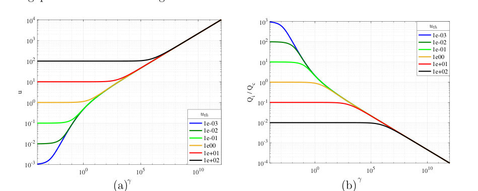
<figcaption class="paper-figure-caption"><b>Fig 2.</b> Fig.1 presents numerical solutions of the quartic equation over a wide dynamic range of normalised applied power γ, for representative values of the thermal density uth (which corresponds to different bath temperatures). Fig.1(a) shows the normalised quasiparticle density u, and Fig.1(b) the normalised internal quality factor Qi/Qc. Here, Qother/Qc = 108 corresponds to the regime where other losses have no influence on the dissipative behaviour of the device. Several features are noteworthy. At low readout power γ, the quasiparticle density saturates at the thermal floor u →uth, and Qi/Qc correspondingly exhibits a constant plateau whose level is set by the bath temperature. As readout...</figcaption>
</figure>
<figure class="paper-figure-card">
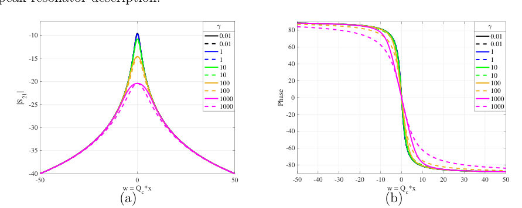
<figcaption class="paper-figure-caption"><b>Fig 3.</b> Figure 2: Transmission magnitude (a) and phase (b) of S21 as a function of frequency at different readout powers. Solid lines: full QPH model; dashed lines: linear resonance curves calculated by Eq.1 using Qc and a fixed Qr obtained from the depth of the matching nonlinear curve as x = 0.</figcaption>
</figure>
<figure class="paper-figure-card">
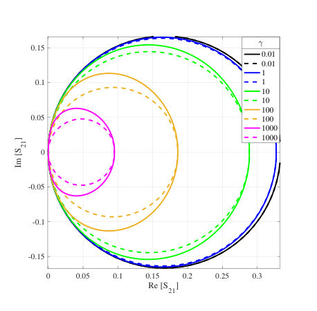
<figcaption class="paper-figure-caption"><b>Fig 4.</b> Figure 3: S21 in Argand complex plane as a function of frequency at different applied readout powers. Solid lines: full QPH model; dashed lines: linear resonance curves cal- culated with the same fixed Qr as in Fig.2.</figcaption>
</figure>
<figure class="paper-figure-card">
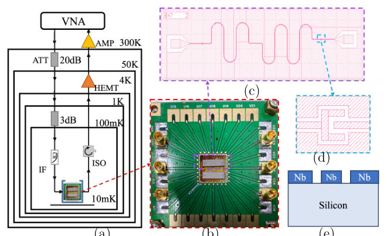
<figcaption class="paper-figure-caption"><b>Fig 5.</b> Figure 4: (a) Schematic diagram of the measurement system based on a dilution refrig- erator. VNA: vector network analyser, ATT: attenuator, IR: infrared filter, ISO: isolator, HEMT: high electron mobility transistor, AMP: room‑temperature amplifier. (b) Photo- graph of the resonator chip wire‑bonded to the PCB. (c) Schematic of the CPW resonator mask layout. (d) Plan‑view of the stub coupling. (e) Cross‑section of the CPW line.</figcaption>
</figure>
</div>

<p><strong>Summary.</strong> This paper develops and validates a theoretical model describing quasiparticle heating losses in superconducting microwave resonators. By analyzing the resulting nonlinear changes in resonance response, the authors identify a unique 'oval-shaped distortion' in the complex plane as a definitive experimental signature for diagnosing when QPH dominates energy dissipation.</p>
<p><strong>Why it may be interesting.</strong> This work provides a concrete, measurable spectroscopic tool (the oval distortion) to diagnose fundamental non-equilibrium energy loss mechanisms (QPH) in superconducting circuits, which is crucial for designing high-performance quantum devices.</p>
<details>
<summary>Detailed structure</summary>
<p><strong>Main problem.</strong> The study investigates the nonlinear behavior of superconducting microwave resonators caused by quasiparticle heating (QPH) effects.</p>
<p><strong>Main result.</strong> A distinctive oval-shaped distortion in the resonance circle plotted in the complex plane serves as a practical and reliable experimental signature for identifying the QPH-dominated loss regime.</p>
<p><strong>Method.</strong> The authors combine theoretical modeling, modifying Rothwarf-Taylor equations to create a macroscopic QPH model, with systematic experimental measurements using VNA sweeps of readout power and bath temperature.</p>
<p><strong>Model / system.</strong> The system is a Niobium (Nb) superconducting half-wavelength coplanar waveguide (CPW) resonator. The theory models the quasiparticle density evolution by modifying Rothwarf-Taylor equations to link the quality factor ($Q$) directly to the microwave readout power ($P_r$).</p>
<p><strong>Key observables.</strong> The primary observables are the $S_{21}$ transmission parameter trajectory in the Argand complex plane, and the extracted internal quality factor ($Q_i/Q_c$) as a function of readout power.</p>
<p><strong>Important parameters / regimes.</strong> Key regimes include the low-power thermal saturation limit and the high-power universal scaling regime ($u \propto P_r^{1/3}$), alongside bath temperature ($T_b$) and readout power ($P_r$).</p>
<p><strong>Assumptions / limitations.</strong> The model assumes that QPH is the dominant source of dissipative non-linearity in the investigated parameter space, allowing for a simplified analysis based on modified Rothwarf-Taylor equations.</p>
<p><strong>Figures summary.</strong> Figures show numerical solutions of the governing quartic equation and experimental $S_{21}$ loci in the Argand plane. These figures illustrate the characteristic oval distortion developing as QPH losses become dominant over other loss mechanisms.</p>
<p><strong>Paper structure.</strong> The paper establishes a theoretical model by modifying Rothwarf-Taylor equations to link $Q$ to power via quasiparticle heating. It then analyzes this theory using numerical solutions and validates it through systematic experimental measurements of the resonance response across varying temperatures and powers, culminating in the identification of the diagnostic signature.</p>
</details>
<details>
<summary>Abstract</summary>
<p>We investigate the nonlinear behavior of a superconducting microwave resonator subjected to a dissipative mechanism where the associated quality factor (Q factor) decreases with increasing dissipated power, leading to a dissipative feedback effect. By modifying the Rothwarf-Taylor equations, we establish a macroscopic quasiparticle heating (QPH) model that directly links the quality factor to the microwave readout power. The key finding is the identification of a distinctive oval-shaped distortion in the resonance circle in the complex plane. This distortion serves as a practical experimental signature for identifying the readout power regime in which QPH dominates the loss, under conditions where other nonlinear mechanisms are sufficiently weak. To validate the model, we design and fabricate a niobium (Nb) half-wavelength coplanar waveguide (CPW) resonator and conduct systematic bath temperature and readout power sweeps. The model provides a well fit to the observed oval-shaped resonance circle distortion across a wide range of operating conditions, confirming the QPH mechanism as the primary source of the dissipative non-linearity in the parameter space investigated.</p>
</details>
<p><sub><a href="#top">↑ back to top</a></sub></p>

<p><a id="paper-2607.16835"></a></p>
<h3 id="distributed-topological-charge-and-spinorial-holonomy-in-yukawa-regularized-graphene-disclinations"><a href="http://arxiv.org/abs/2607.16835v1">Distributed Topological Charge and Spinorial Holonomy in Yukawa-Regularized Graphene Disclinations</a></h3>
<p><strong>Authors:</strong> A. M. de M. Carvalho, G. Q. Garcia, E. Brito, C. Furtado<br>
<strong>Type:</strong> theory · <strong>Category:</strong> other · <strong>PDF:</strong> <a href="https://arxiv.org/pdf/2607.16835v1">https://arxiv.org/pdf/2607.16835v1</a><br>
<strong>Analysis basis:</strong> full PDF text, analyzed in chunks
<strong>Topic relevance:</strong> <code>Keldysh / 2PI / non-Gaussian methods</code> <strong>1/5</strong> · <code>analog quantum simulation</code> <strong>1/5</strong> · <code>correlated / nonlocal dissipation</code> <strong>1/5</strong> · <code>driven-dissipative phase transition</code> <strong>1/5</strong> · <code>methods for driven-dissipative</code> <strong>1/5</strong></p>
<div class="figure-strip-hint">↔ Scroll figures horizontally</div>
<div class="paper-figures-scroll">
<figure class="paper-figure-card">
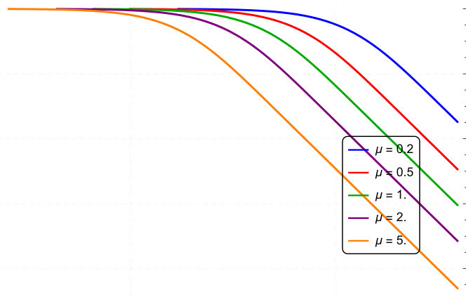
<figcaption class="paper-figure-caption"><b>Fig 1.</b> FIG. 1. Conformal factor Ω(r) (core-regular gauge, Ω(0) = 0) as a function of r (logarithmic scale) for several values of the regularization parameter µ.</figcaption>
</figure>
<figure class="paper-figure-card">
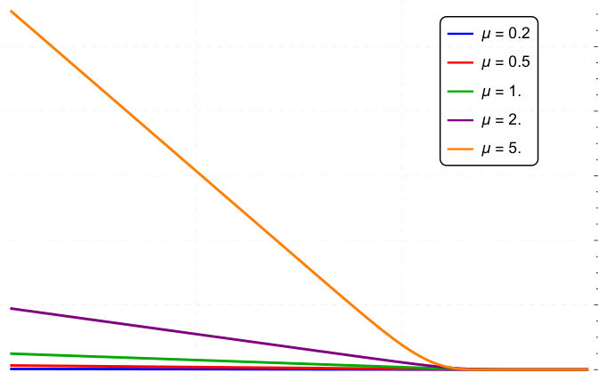
<figcaption class="paper-figure-caption"><b>Fig 2.</b> FIG. 2. Scalar curvature R(r) given by Eq. (4.2) as a function of the radial coordinate r (logarithmic scale) for the same set of µ values used in Fig. 1.</figcaption>
</figure>
<figure class="paper-figure-card">
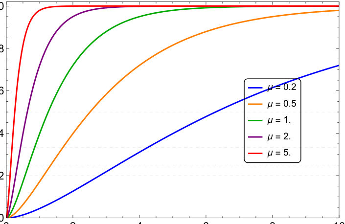
<figcaption class="paper-figure-caption"><b>Fig 3.</b> FIG. 3. Normalized enclosed topological charge Q(ρ)/Λ as a function of the radial coordinate ρ for different values of the screening parameter µ. The charge increases monotonically from zero at the regular core to the asymptotic value Q(ρ) = Λ. Larger values of µ localize the curvature more strongly and lead to a faster saturation of the enclosed topological charge. The horizontal dashed lines indicate representative fractions of the total charge associated with the discrete holonomy-invariance condition discussed in Sec. V.</figcaption>
</figure>
</div>

<p><strong>Summary.</strong> This paper regularizes the singular geometry of disclinations in graphene using a Yukawa potential, creating a smooth, finite-core defect structure. It calculates that this regularization leads to scale-dependent topological charge and a smoothly varying spinorial holonomy for Dirac quasiparticles. This provides a physically realistic extension beyond idealized models for studying geometric phases in 2D materials.</p>
<p><strong>Why it may be interesting.</strong> This work provides a concrete mathematical framework for handling singular topological defects in condensed matter systems, offering insights into how finite-size effects modify global geometric phases relevant to quantum transport.</p>
<details>
<summary>Detailed structure</summary>
<p><strong>Main problem.</strong> The study addresses the singularity inherent in ideal conical geometries used to model topological defects (disclinations) by introducing a smooth, finite-core regularization.</p>
<p><strong>Main result.</strong> The Yukawa regularization successfully replaces the singular curvature with a distributed source, leading to scale-dependent topological charge and a smoothly varying, radius-dependent spinorial holonomy for quasiparticles.</p>
<p><strong>Method.</strong> The authors solve differential equations derived from geometric considerations (Poisson-like equation) using a modified Helmholtz kernel to model the curvature distribution.</p>
<p><strong>Model / system.</strong> The system models graphene-like materials containing topological disclinations. The physics is described by massless Dirac quasiparticles propagating in a curved background metric determined by the Yukawa regularization.</p>
<p><strong>Key observables.</strong> Scale-dependent topological charge, radius-dependent holonomy (geometric phase), and the conformal factor $\Omega(r)$.</p>
<p><strong>Important parameters / regimes.</strong> The screening length ($\ell = \mu^{-1}$) controls the size of the finite core; $\Lambda$ characterizes the total integrated curvature.</p>
<p><strong>Assumptions / limitations.</strong> Ideal conical defects are insufficient due to singularities, necessitating a Yukawa-type regularization that preserves asymptotic topology.</p>
<p><strong>Figures summary.</strong> Figures illustrate the normalized enclosed topological charge $Q(
ho)/\Lambda$ versus radial coordinate $
ho$, showing a monotonic increase from zero at the core to the total value $\Lambda$ asymptotically.</p>
<p><strong>Paper structure.</strong> The paper progresses by first establishing the need for regularization, deriving the smooth metric components using the Yukawa kernel, and finally analyzing the resulting dynamics of Dirac quasiparticles in this modified background.</p>
</details>
<details>
<summary>Abstract</summary>
<p>Conical geometries provide the standard description of disclinations, but they concentrate the curvature at a singular apex. We introduce a Yukawa-type regularization that replaces this singularity by a smooth curvature distribution while preserving the asymptotic topology of the defect. Exact expressions are obtained for the conformal factor, curvature, and enclosed topological charge. The resulting geometry exhibits a scale-dependent topological charge and a corresponding radius-dependent holonomy, establishing a direct connection between distributed curvature and geometric phases. We further investigate the dynamics of massless Dirac quasiparticles in this background and show that the regularized core modifies the spin connection while preserving the asymptotic topological signature of the defect. These results provide a finite-core extension of the conventional conical description and offer a natural framework for studying geometric and topological effects in graphene-like systems.</p>
</details>
<p><sub><a href="#top">↑ back to top</a></sub></p>

<p><a id="paper-2607.17199"></a></p>
<h3 id="spin-valley-layer-coupling-with-dual-control-via-stacking-and-electric-field-in-antiferromagnetic-bilayer-janus-yibr"><a href="http://arxiv.org/abs/2607.17199v1">Spin-valley-layer coupling with dual control via stacking and electric field in antiferromagnetic bilayer Janus YIBr</a></h3>
<p><strong>Authors:</strong> Bo-Wen Yu<br>
<strong>Type:</strong> theory · <strong>Category:</strong> other · <strong>PDF:</strong> <a href="https://arxiv.org/pdf/2607.17199v1">https://arxiv.org/pdf/2607.17199v1</a><br>
<strong>Analysis basis:</strong> full PDF text, analyzed in chunks
<strong>Topic relevance:</strong> <code>analog quantum simulation</code> <strong>1/5</strong> · <code>exotic spin models in light-matter</code> <strong>1/5</strong> · <code>spintronics-quantum-optics interface</code> <strong>1/5</strong></p>
<div class="figure-strip-hint">↔ Scroll figures horizontally</div>
<div class="paper-figures-scroll">
<figure class="paper-figure-card">
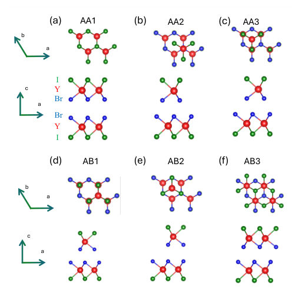
<figcaption class="paper-figure-caption"><b>Fig 1.</b> FIG. 1. The top-view and side-view structure of six bilayer Janus YIBr. I, Y, and Br atoms are green, red, and blue, respectively. The primitive vectors are indicated with the arrows.</figcaption>
</figure>
<figure class="paper-figure-card">
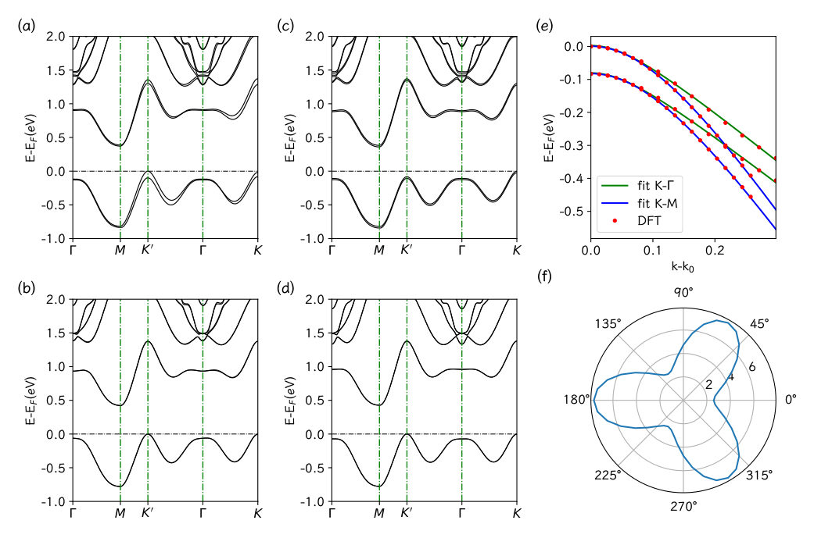
<figcaption class="paper-figure-caption"><b>Fig 2.</b> FIG. 2. Band structures for (a) AA1 with an out-of-plane easy axis, (b) AA3 with an in-plane easy axis, (c) AB2 with an in-plane easy axis, and (d) AB3 with an out-of-plane easy axis. (e) Effective model fit (solid lines) to the DFT bands. (f) Angular dependence of α for the AA1 structure with an out-of-plane easy axis.</figcaption>
</figure>
<figure class="paper-figure-card">
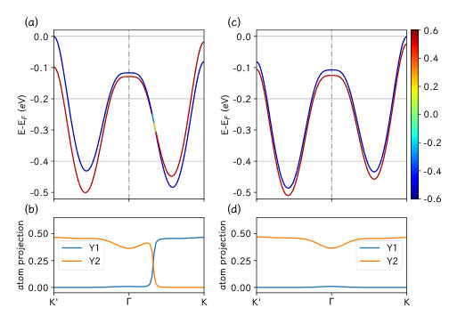
<figcaption class="paper-figure-caption"><b>Fig 3.</b> FIG. 3. The spin of the two valence bands for AA1 (a,b) and AB3(c,d) structure and the atoms projection of the top valence band. The Y1 means the Y atom from the lower layer and Y2 means the Y atom from the upper layer.</figcaption>
</figure>
<figure class="paper-figure-card">
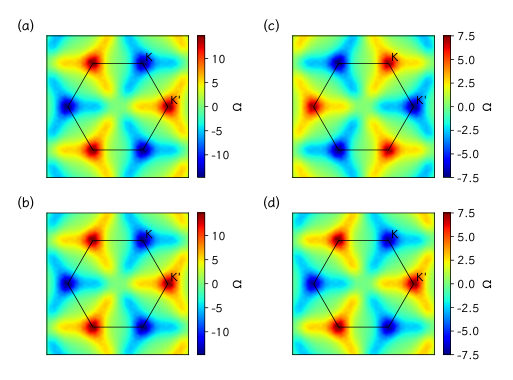
<figcaption class="paper-figure-caption"><b>Fig 4.</b> FIG. 4. The summary of the Berry curvature of the two valence bands for AA1 (a) and AB3 (b)structure. The Berry curvature for the upper valence band (c) and the lower valence band (d).</figcaption>
</figure>
<figure class="paper-figure-card">
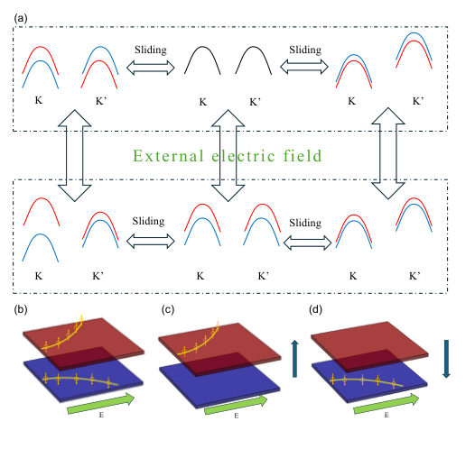
<figcaption class="paper-figure-caption"><b>Fig 5.</b> FIG. 6. (a) Joint regulation of electric properties by sliding and external electric field. (b-d) The valley splitting con- trolled by the electric field. Positive sign (+) means holes</figcaption>
</figure>
</div>

<p><strong>Summary.</strong> This theoretical study explores the tunability of spin-valley-layer coupling in antiferromagnetic bilayer Janus YIBr materials. By combining different stacking arrangements with an applied electric field, researchers demonstrate a mechanism to control quantum properties like valley polarization and induce Dirac-like dispersion relations. This work suggests the material's potential for advanced electronic applications such as novel filters or memory elements.</p>
<p><strong>Why it may be interesting.</strong> The ability to engineer multiple degrees of freedom (spin, valley, layer) simultaneously via structural design and external fields is highly relevant for designing next-generation spintronic or topological memory devices that go beyond simple charge transport.</p>
<details>
<summary>Detailed structure</summary>
<p><strong>Main problem.</strong> The study investigates how spin, valley, and layer degrees of freedom can be coupled and controlled using stacking variations and external electric fields in antiferromagnetic bilayer Janus YIBr structures.</p>
<p><strong>Main result.</strong> The system exhibits tunable spin-valley coupling, leading to potential quantum valley Hall effects, which can be continuously modulated by combining structural changes (stacking) with an applied electric field.</p>
<p><strong>Method.</strong> The research employs first-principles Density Functional Theory calculations combined with the development and fitting of effective low-energy Hamiltonian models.</p>
<p><strong>Model / system.</strong> The physical system is an antiferromagnetic 2D bilayer Janus YIBr structure, analyzed across six different stacking configurations. The theoretical framework involves modeling spin, valley, and layer coupling using generalized Hamiltonians incorporating external electric field terms.</p>
<p><strong>Key observables.</strong> Spin splitting (up to $\sim 0.4 	ext{ eV}$), valley polarization ($\pm 0.08 	ext{ eV}$), Berry curvature distribution, and magnetic anisotropy energy.</p>
<p><strong>Important parameters / regimes.</strong> External electric field strength ($E$), stacking configuration type (AA vs AB), and the resulting easy axis direction (in-plane vs out-of-plane).</p>
<p><strong>Assumptions / limitations.</strong> The analysis relies on DFT calculations using GGA+U approximations, and the low-energy physics is modeled by fitting parameters ($\alpha, eta$) to the calculated valence band structures.</p>
<p><strong>Figures summary.</strong> Figures illustrate band structures showing spin splitting and valley polarization for different stacking types (AA1, AB3) under varying easy axis conditions. Berry curvature maps confirm the Quantum Valley Hall effect in certain configurations, and later figures show electric field control over these properties.</p>
<p><strong>Paper structure.</strong> The paper proceeds by first establishing the magnetic ground state via MAE calculations across six structures. It then analyzes band structure features (spin/valley splitting) dependent on stacking and easy axis direction. Finally, it models the system using effective Hamiltonians to demonstrate how external electric fields provide an additional continuous control knob for these coupled quantum properties.</p>
</details>
<details>
<summary>Abstract</summary>
<p>The modification and enhancement of antiferromagnetic two-dimensional semiconductor is considered crucial for realizing novel electronic properties and facilitating promising applications. For this purpose, we investigate six antiferromagnetic 2D bilayer Janus YIBr structures with different stacking variations by means of first-principles calculation and an effective low-energy model. The calculation of magnetic anisotropy energy shows that the direction of easy axis varies with different stacking. First-principles-calculated energy bands reveal that there is a Dirac relativistic dispersion relation in the valence band in a wide energy window of 0.3 eV at least. The calculations for spin, atom properties and Berry curvature description show that there is spin, valley and layer coupling with spin splitting, valley polarization and quantum valley Hall insulators can be achieved in the bilayer Janus structures. Further analyses of the effect of external electric field can be used to control spin, valley and layer of the hole near the Fermi level. These can be useful in future exploration for novel properties, control methods and more functionalities in bilayer Janus structures.</p>
</details>
<p><sub><a href="#top">↑ back to top</a></sub></p>

<p><a id="paper-2607.18157"></a></p>
<h3 id="tunable-superconductivity-mediated-by-heavy-electron-plasmons-band-structure-and-quantum-geometric-engineering"><a href="http://arxiv.org/abs/2607.18157v1">Tunable Superconductivity Mediated by Heavy-Electron Plasmons: Band-Structure and Quantum-Geometric Engineering</a></h3>
<p><strong>Authors:</strong> Sang Hyun Park, Junyeong Ahn<br>
<strong>Type:</strong> theory · <strong>Category:</strong> strongly correlated electrons · <strong>PDF:</strong> <a href="https://arxiv.org/pdf/2607.18157v1">https://arxiv.org/pdf/2607.18157v1</a><br>
<strong>Analysis basis:</strong> full PDF text, analyzed in chunks
<strong>Topic relevance:</strong> <code>Keldysh / 2PI / non-Gaussian methods</code> <strong>1/5</strong> · <code>analog quantum simulation</code> <strong>1/5</strong> · <code>driven-dissipative phase transition</code> <strong>1/5</strong></p>
<div class="figure-strip-hint">↔ Scroll figures horizontally</div>
<div class="paper-figures-scroll">
<figure class="paper-figure-card">
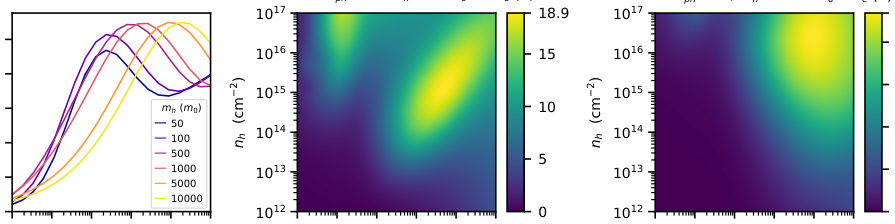
<figcaption class="paper-figure-caption"><b>Fig 1.</b> FIG. 2. Calculations of the Tc using the linearized isotropic Eliashberg equations for the setup shown in Fig. 1(c). (a-c) Plasmon-only results as a function of the light and heavy electron carrier density and effective mass. (d-f) Results that include a contribution from the phonon with coupling strength λph = 0.4. For (a),(d) the light electron carrier density is fixed to nl = 5 × 1014cm−2. The light electron mass is fixed to ml = m0.</figcaption>
</figure>
<figure class="paper-figure-card">
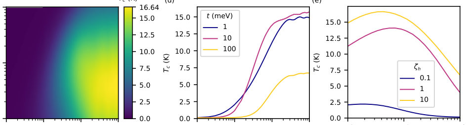
<figcaption class="paper-figure-caption"><b>Fig 2.</b> FIG. 3. Quantum-geometric control of interband-plasmon-mediated superconductivity in gapped flat bands. (a) Schematic of the setup: a pair of flat bands separated by an energy 2t supports a pairing interaction mediated by gapped interband plasmons (wavy line). The interband plasmons arise from coherent interband transitions (dashed arrow) rather than free-carrier motion. The associated interband polarization is controlled by the BZ averaged quantum distance dQ, and the light electrons (red, mass ml) form the Cooper pairs. The inset is a schematic representation of the quantum distance between two states on the Bloch sqhere. (b) Interband plasmon dispersion ̵hωp/t versus qa/π for several...</figcaption>
</figure>
<figure class="paper-figure-card">
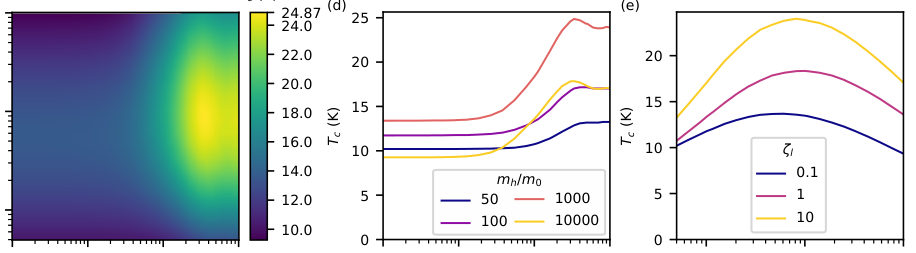
<figcaption class="paper-figure-caption"><b>Fig 3.</b> FIG. 4. Enhancement of heavy-electron-plasmon-mediated superconductivity by light-electron quantum geometry. (a) Schematic of the setup: the light (pairing) electrons occupy a parabolic band (mass ml) endowed with non-trivial quan- tum geometry, obtained from the tunable metric model of Eq. (9) plus an added trivial square-lattice dispersion, while the heavy electrons (mass mh) supply the plasmon pairing glue. The non-trivial geometry suppresses the static screening (dashed arrow) from the light electrons. (b) Dimensionless plasmonic attraction λ, renormalized Coulomb repulsion µ∗, and net pairing strength λ −µ∗as functions of the light-electron quantum-metric parameter ζl. (c)...</figcaption>
</figure>
<figure class="paper-figure-card">
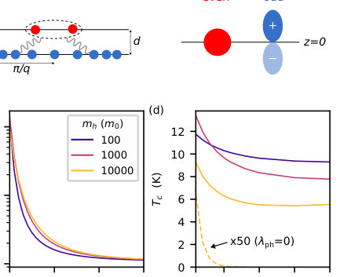
<figcaption class="paper-figure-caption"><b>Fig 4.</b> FIG. 5. Dependence on layer separation and screening from the dielectric environment. (a) Schematic representation of layer separation between the light electrons (red) and the heavy electrons (blue). The heavy electrons support plas- mons of wavelength 2π/q. (b) Schematic representation of a mirror symmetric system with coexisting mirror-even and mirror-odd orbitals with center of mass in the z = 0 plane. Dependence of Tc on the (c) layer separation d and (d) di- electric constant of the environment ϵenv. Carrier densities are fixed to nl = 5×1014cm−2, nh = 1015cm−2 and the phonon term is fixed to λph = 0.4. The dashed yellow line in (d) is the λph = 0 result for mh = 10000m0 scaled by a...</figcaption>
</figure>
</div>

<p><strong>Summary.</strong> This work develops a theory for high-temperature superconductivity using plasmons as the pairing glue, moving beyond traditional phonon mechanisms. It introduces the concept of 'flat-band mediators,' where flat bands generate collective excitations that enhance $T_c$ in an adjacent itinerant electron system. The findings suggest promising material platforms like multilayer graphene exhibiting coexisting light and heavy electronic sectors.</p>
<p><strong>Why it may be interesting.</strong> While focused on superconductivity, the reliance on 'quantum geometry' and collective excitations mediated by band structure features (like flat bands) provides theoretical tools applicable to understanding strongly correlated phases driven by geometric constraints or topological effects in quantum materials.</p>
<details>
<summary>Detailed structure</summary>
<p><strong>Main problem.</strong> Establishing fundamental principles for achieving high superconducting critical temperatures ($T_c$) by engineering pairing mechanisms beyond conventional phonon mediation.</p>
<p><strong>Main result.</strong> The paper establishes a 'flat-band mediator paradigm,' showing that flat bands can serve as tunable mediators whose collective charge excitations set the superconducting energy scale, potentially boosting $T_c$ significantly above 20 K when combined with phonons.</p>
<p><strong>Method.</strong> Theoretical calculations utilizing Eliashberg theory and Random Phase Approximation (RPA) to model electron-plasmon interactions in two-carrier and flat-band systems.</p>
<p><strong>Model / system.</strong> The study models two-carrier systems (light/heavy electrons) and insulating systems with flat bands. The pairing mechanism is mediated by plasmons, whose dispersion and coupling are governed by the heavy-electron quantum metric or interband transitions.</p>
<p><strong>Key observables.</strong> $T_c$ (critical temperature), Plasmon energy scale ($\Omega_p$), Pairing strength ($\lambda$).</p>
<p><strong>Important parameters / regimes.</strong> Carrier densities ($n_l, n_h$), effective masses ($m_l, m_h$), quantum geometry parameters ($\zeta$), and phonon coupling constant ($\lambda_{ph}$).</p>
<p><strong>Assumptions / limitations.</strong> The analysis uses the Random Phase Approximation (RPA) and linearized isotropic Eliashberg equations; neglecting vertex corrections beyond Migdal's theorem is a key approximation.</p>
<p><strong>Figures summary.</strong> Figures illustrate schematic comparisons between phonon-mediated and plasmon-mediated superconductivity, showing $T_c$ dependence on carrier densities, and detailing the quantum geometry effects in flat-band systems.</p>
<p><strong>Paper structure.</strong> The paper progresses from establishing general principles (plasmon mediation) to analyzing specific metallic two-carrier models, then advancing to the more complex insulating flat-band scenario, culminating in a platform proposal based on coexisting light/heavy electrons.</p>
</details>
<details>
<summary>Abstract</summary>
<p>Conventional superconductivity derives its pairing glue from lattice vibrations, tying its characteristic scales to chemistry and atomic masses. Plasmons$-$the collective oscillations of electrons$-$can instead be reshaped through electronic structure engineering, but the principles governing optimal plasmon-mediated pairing remain unclear. Here, we establish such principles for two-carrier systems in which heavy-electron plasmons mediate the pairing of light electrons. Within the random-phase approximation and Eliashberg theory, we calculate the optimal $T_c$ of minimal metallic models and show that it is controlled by a competition between the plasmon energy scale and retardation-driven suppression of the repulsion, yielding optimal carrier densities and band masses. While the plasmon channel alone reaches only $T_c\sim$ 0.1 K, a moderate phonon attraction cooperates with it, boosting $T_c$ by two orders of magnitude to above 20 K. However, the band flattening needed for slow metallic plasmons also favors the development of competing orders. We therefore consider an insulating system in which coherent interband transitions between flat bands generate gapped interband plasmons without free carriers. The heavy-band quantum metric governs the dispersion and electron-plasmon pairing strength of the interband plasmon, while the quantum geometry of the light band suppresses static screening and enhances the net attraction. Because layer separation rapidly weakens pairing, we propose systems with coexisting light and heavy electrons living in different mirror-symmetry sectors of the same layer as promising platforms. Our results establish a new role for flat-band systems in superconductivity: rather than hosting the paired electrons themselves, they can serve as a tunable pairing mediator whose collective charge excitations set the superconducting energy scale beyond their narrow bandwidth.</p>
</details>
<p><sub><a href="#top">↑ back to top</a></sub></p>

<p><a id="paper-2607.16435"></a></p>
<h3 id="two-color-solitons-in-kerr-third-harmonic-generation-model"><a href="http://arxiv.org/abs/2607.16435v1">Two-color solitons in Kerr third harmonic generation model</a></h3>
<p><strong>Authors:</strong> Alexey Sukhinin, Curtis Menyuk, Natalia Litchinitser, Jean-Claude Diels, Alejandro B Aceves<br>
<strong>Type:</strong> theory · <strong>Category:</strong> other · <strong>PDF:</strong> <a href="https://arxiv.org/pdf/2607.16435v1">https://arxiv.org/pdf/2607.16435v1</a><br>
<strong>Analysis basis:</strong> full PDF text, analyzed in chunks
<strong>Topic relevance:</strong> <code>driven-dissipative phase transition</code> <strong>1/5</strong> · <code>interference shaping light</code> <strong>1/5</strong> · <code>non-equilibrium dynamics</code> <strong>1/5</strong></p>
<div class="figure-strip-hint">↔ Scroll figures horizontally</div>
<div class="paper-figures-scroll">
<figure class="paper-figure-card">
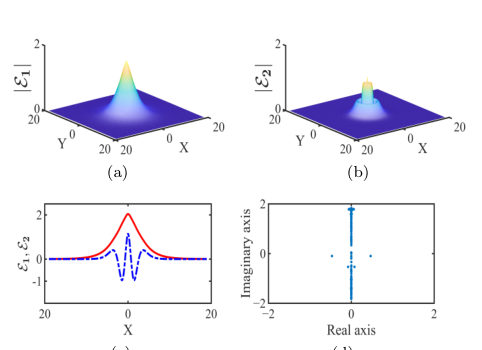
<figcaption class="paper-figure-caption"><b>Fig 1.</b> FIG. 1. (a) 3D profile of field |E1(x, y)| with power P1 = 15.9753. (b) 3D profile of field |E2(x, y)|with power P2 = 2.3873. (c) Radial profile of both electric fields E1(x, y) (red) and E2(x, y) (blue) with total power P = P1 + P2 = 18.3626. (d) Linear stability spectrum</figcaption>
</figure>
<figure class="paper-figure-card">
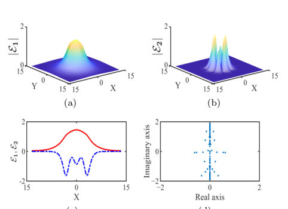
<figcaption class="paper-figure-caption"><b>Fig 2.</b> FIG. 3. 3D profile of field |E1(x, y)| with power P1 = 15.6411. (b) 3D profile of field |E2(x, y)|with power P2 = 4.8127. (c) Radial profile of both electric fields E1(x, y) (red) and E2(x, y) (blue) with total power P = P1 + P2 = 20.4538. (d) Linear stability spectrum</figcaption>
</figure>
<figure class="paper-figure-card">
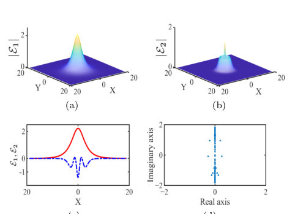
<figcaption class="paper-figure-caption"><b>Fig 3.</b> FIG. 2. 3D profile of field |E1(x, y)| with power P1 = 17.4778. (b) 3D profile of field |E2(x, y)|with power P2 = 2.2858. (c) Radial profile of both electric fields E1(x, y) (red) and E2(x, y) (blue) with total power P = P1 + P2 = 19.7636. (d) Linear stability spectrum</figcaption>
</figure>
<figure class="paper-figure-card">
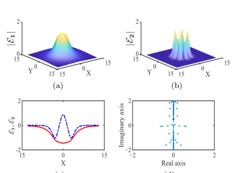
<figcaption class="paper-figure-caption"><b>Fig 4.</b> FIG. 4. 3D profile of field |E1(x, y)| with power P1 = 15.6428. (b) 3D profile of field |E2(x, y)| with power P2 = 4.8120. (c) Radial profile of both electric fields E1(x, y) (red) and E2(x, y) (blue) with total power P = P1 + P2 = 20.4548. (d) Linear stability spectrum</figcaption>
</figure>
<figure class="paper-figure-card">
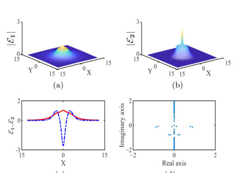
<figcaption class="paper-figure-caption"><b>Fig 5.</b> FIG. 5. 3D profile of field |E1(x, y)| with power P1 = 5.0224. (b) 3D profile of field |E2(x, y)|with power P2 = 5.4583. (c) Radial profile of both electric fields E1(x, y) (red) and E2(x, y) (blue) with total power P = P1 + P2 = 10.4807. (d) Linear stability spectrum</figcaption>
</figure>
</div>

<p><strong>Summary.</strong> This paper analyzes two-color solitons in a resonant Kerr third-harmonic generation medium. The research identifies two distinct families of localized states whose stability and collapse behavior depend critically on the relative power between the fundamental and third harmonic components. By simulating perturbations, the authors reveal novel collapse mechanisms absent in standard self-focusing theories.</p>
<p><strong>Why it may be interesting.</strong> This work explores complex nonlinear wave dynamics in a resonant optical system, providing insights into non-standard self-focusing mechanisms that deviate from single-component models, which is relevant for understanding energy localization in nonlinear media.</p>
<details>
<summary>Detailed structure</summary>
<p><strong>Main problem.</strong> The study investigates two-color, two-dimensional spatially localized light modes (solitons) within a resonant Kerr third-harmonic generation model.</p>
<p><strong>Main result.</strong> Two distinct families of solitons exist whose dynamics are governed by the relative power distribution between harmonics, showing that no universal critical collapse power exists.</p>
<p><strong>Method.</strong> The authors employed numerical methods, including solving coupled nonlinear equations for stationary states and performing direct time-domain simulations using pseudo-spectral Fourier techniques on perturbed solutions.</p>
<p><strong>Model / system.</strong> The system is a resonant Kerr third-harmonic generation (THG) model involving two interacting color beams ($\omega_1$ and $2\omega_1$), described by coupled nonlinear Schrödinger equations.</p>
<p><strong>Key observables.</strong> Individual component powers ($P_1, P_2$), total power, linear stability spectrum eigenvalues, and the evolution of field amplitudes during propagation (collapse vs. diffraction).</p>
<p><strong>Important parameters / regimes.</strong> The ratio of power between the fundamental and third harmonic components ($P_1$ vs $P_2$).</p>
<p><strong>Assumptions / limitations.</strong> The analysis uses a quasi-monochromatic approximation and assumes the existence of stationary solutions which are then perturbed for dynamic study.</p>
<p><strong>Figures summary.</strong> Figures illustrate representative localized states, stability spectra for different power regimes, and time evolution profiles showing collapse dynamics preceded by strong third-harmonic oscillations in certain families.</p>
<p><strong>Paper structure.</strong> The paper proceeds by deriving the coupled nonlinear equations, numerically finding two distinct stationary soliton families based on power distribution, and then simulating perturbations around these states to characterize their stability and collapse behavior.</p>
</details>
<details>
<summary>Abstract</summary>
<p>We investigate two-color, two dimensional spatially localized light modes in a resonant Kerr third-harmonic generation model. Using computational tools, we identify two distinct families of localized states. Unlike the single-component 2D nonlinear Schrödinger equation and previously studied non-resonant two-color systems, the dynamics are not dictated by a universal critical power, but depend on the distribution of power between the harmonics. The "fundamental-dominated" family acts as a "dynamical separatrix" between simultaneous collapse and joint diffraction, whereas the "third-harmonic-dominated" family does not. We further identify resonant collapse events accompanied by strong oscillations of the third harmonic, revealing a collapse mechanism absent from standard Kerr self-focusing.</p>
</details>
<p><sub><a href="#top">↑ back to top</a></sub></p>

<p><a id="paper-2607.16699"></a></p>
<h3 id="period-dependent-suppression-of-fourier-peaks-for-topography-images-analysis-of-periodicity-of-triple-step-arrays-on-vicinal-sih-h-m-surfaces"><a href="http://arxiv.org/abs/2607.16699v1">Period-dependent suppression of Fourier peaks for topography images: Analysis of periodicity of triple-step arrays on vicinal Si(h h m) surfaces</a></h3>
<p><strong>Authors:</strong> A. Yu. Aladyshkin, A. N. Chaika, V. N. Semenov, A. S. Aladyshkina, A. M. Ionov, S. I. Bozhko<br>
<strong>Type:</strong> experiment · <strong>Category:</strong> other · <strong>PDF:</strong> <a href="https://arxiv.org/pdf/2607.16699v1">https://arxiv.org/pdf/2607.16699v1</a><br>
<strong>Analysis basis:</strong> full PDF text, analyzed in chunks
<strong>Topic relevance:</strong> <code>Frenkel-Kontorova</code> <strong>1/5</strong> · <code>methods for driven-dissipative</code> <strong>1/5</strong></p>
<div class="figure-strip-hint">↔ Scroll figures horizontally</div>
<div class="paper-figures-scroll">
<figure class="paper-figure-card">
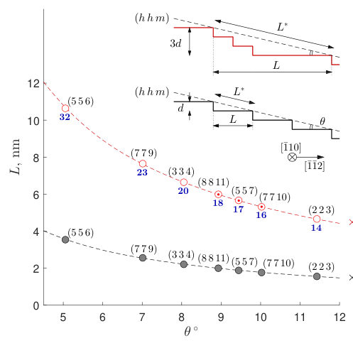
<figcaption class="paper-figure-caption"><b>Fig 1.</b> Figure 1: Period 𝐿of an array consisting of monatomic steps (∙) and triple steps (∘), aligned along the [¯1 1 0] direction, as a function of the miscut angle 𝜃 between the (ℎℎ𝑚) and (1 1 1) crystallographic planes for various vicinal Si surfaces [24]. Insets illustrate the relationships between the interlayer distance 𝑑= 𝑐/ √</figcaption>
</figure>
<figure class="paper-figure-card">
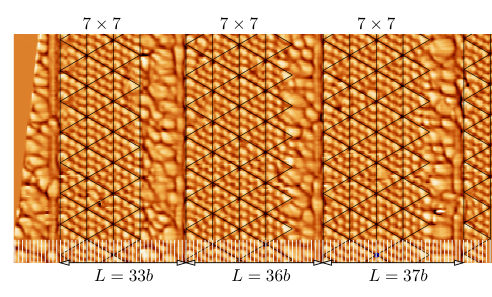
<figcaption class="paper-figure-caption"><b>Fig 2.</b> Figure 2: A typical map of the differential signal 𝐷(𝑥, 𝑦) corresponding to the topography image of a vicinal Si(5 5 6) surface with rather wide (1 1 1) terraces after applying geometrical corrections (corrected image size 42×20 nm2, bias voltage 𝑈= −0.6 V, tunneling current 𝐼= 80 pA). This map was prepared using the difference-of-Gaussians procedure (1) as described in the text (smoothing parameters: 𝜎1 = 0.06 nm and 𝜎2 = 2𝜎1 = 0.11 nm). Black solid lines mark the edges of the Si(111)7 × 7 unit cells. The positions of the atomic rows in the Si(111)1 × 1 lattice are marked by vertical white lines spaced regularly at 𝑏= 0.333 nm.</figcaption>
</figure>
<figure class="paper-figure-card">
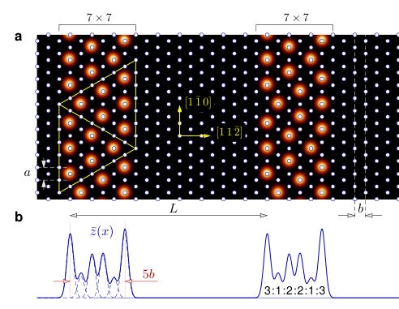
<figcaption class="paper-figure-caption"><b>Fig 3.</b> Figure 3: a – Periodic model structure which consists of the Si(1 1 1)7 × 7 stripes, repeating with a period 𝐿(here 𝐿= 18𝑏). Yellow solid lines outline a unit cell for the 7 × 7 lattice, consisting of two equilateral triangles and containing twelve adatoms. White dots represent the positions of the Si(1 1 1)1×1 atoms. b – The local concentration of the adatoms, averaged along the vertical direction, is plotted as a function of the horizontal 𝑥-coordinate.</figcaption>
</figure>
<figure class="paper-figure-card">
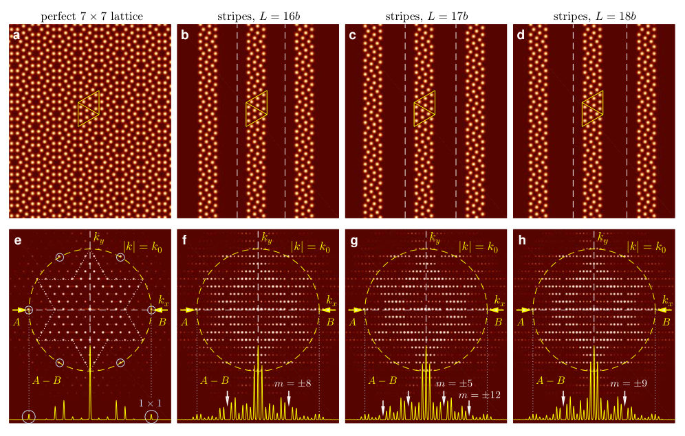
<figcaption class="paper-figure-caption"><b>Fig 4.</b> Figure 4: Top row – Model images 𝑧(𝑥, 𝑦) for the perfect Si(1 1 1)7 × 7 lattice (panel a) and for one-dimensional periodic arrays of stripes with the Si(1 1 1)7 × 7 reconstruction and periods 𝐿= 16𝑏(panel b), 17𝑏(panel c), and 18𝑏(panel d). These parameters correspond to the atomic lattices of the Si(1 1 1) terraces for (7 7 10), (5 5 7), and (8 8 11) wafers, respectively. All images have dimensions 18 × 21.6 nm2. The parameter 𝑏= 0.333 nm is the spacing between atomic rows in the horizontal [11¯2] direction. Bottom row – Fourier transforms |^𝑧(𝑘𝑥, 𝑘𝑦)| computed for the images in panels a–d (image size 50 × 60 nm−2). The radius of the circle marking the expected positions of the first-order...</figcaption>
</figure>
<figure class="paper-figure-card">
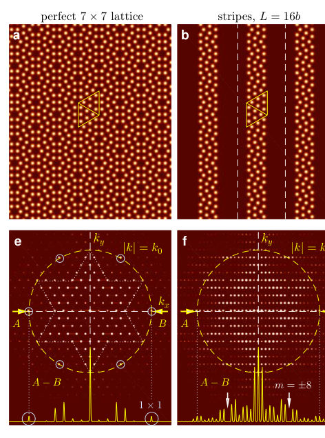
<figcaption class="paper-figure-caption"><b>Fig 5.</b> Figure 6 shows the dependence of 𝐴𝑚on its index 𝑚for various periods from 𝐿= 15𝑏to 𝐿= 19𝑏. Equation (6) allows us to draw the following conclusion: (i) the periodic arrays of 5𝑏-wide 7 × 7 stripes with an even 𝐿/𝑏ratio always exhibit complete suppression of the Fourier peaks with the indices 𝑚= ±𝐿/(2𝑏), located at 𝑘𝑥= ±𝑘0/2. This explains the disappearance of the peaks corresponding to 𝑚= ±8 for the array with 𝐿= 16𝑏and</figcaption>
</figure>
</div>

<p><strong>Summary.</strong> This paper presents a novel method for determining the periodicity of atomic step arrays on vicinal silicon surfaces using raw Scanning Tunneling Microscopy data. By applying Difference-of-Gaussians filtering and analyzing the Fourier transform's characteristic peak suppression, the authors achieved high precision in measuring the step period. This technique allows for accurate characterization of surface crystallography even when traditional measurement methods fail due to instrumental artifacts.</p>
<p><strong>Why it may be interesting.</strong> While not directly quantum information theory, this work represents a highly advanced application of signal processing (Fourier analysis) to characterize nanoscale physical structures, which shares mathematical rigor with analyzing correlation functions in condensed matter systems.</p>
<details>
<summary>Detailed structure</summary>
<p><strong>Main problem.</strong> The reliable determination of periodicity for multiatomic steps on high-Miller-index vicinal Si surfaces is difficult due to surface tilt, narrow terraces, and instrumental distortions.</p>
<p><strong>Main result.</strong> By analyzing the Fourier transform of differential maps derived from raw STM topography data, the authors determined a precise period of 5.99 nm for triple-step arrays, suggesting a local $  ext{Si}(8 8 11)$ orientation on nominally $(5 5 7)$-oriented wafers.</p>
<p><strong>Method.</strong> The analysis uses Scanning Tunneling Microscopy (STM) data processed via the Difference-of-Gaussians (DoG) approach to generate differential maps. Periodicity is extracted by analyzing the period-dependent suppression of specific Fourier peaks in the FFT pattern.</p>
<p><strong>Model / system.</strong> The physical system is vicinal single-crystal silicon wafers ($ ext{Si}(h h m)$), specifically focusing on periodic triple-step staircases formed on $  ext{Si}(5 5 7)$. The analysis models the adatom concentration function averaged over the surface.</p>
<p><strong>Key observables.</strong> The intensity and pattern of Fourier peaks (specifically, the suppression of specific $m$-th order peaks) in the differential map's FFT.</p>
<p><strong>Important parameters / regimes.</strong> Periodicity ($L$), interatomic distance ($b=0.333$ nm), and the number of $ ext{Si}(1 1 1)$ unit cells involved in the structure (e.g., $7 	imes 7$).</p>
<p><strong>Assumptions / limitations.</strong> The method assumes that the periodic structures are commensurable with the underlying crystal lattice, allowing for Fourier analysis to reveal periodicity-dependent suppression effects.</p>
<p><strong>Figures summary.</strong> Figures illustrate the DoG processing of topography images and show model calculations where the expected period ($L=16b, 17b, 18b$) dictates which specific Fourier peaks are suppressed in the resulting FFT pattern.</p>
<p><strong>Paper structure.</strong> The paper establishes the difficulty of traditional measurements on stepped surfaces, introduces the DoG processing technique to mitigate artifacts, and then uses theoretical modeling (based on adatom concentration) combined with experimental observation of peak suppression to derive the precise local surface orientation and periodicity.</p>
</details>
<details>
<summary>Abstract</summary>
<p>Reliable determination of the periodicity of multiatomic steps on high-Miller-index vicinal surfaces is often complicated by (i) the presence of relatively narrow terraces tilted at large angles relative to the scanning plane, and (ii) unavoidable distortions in the lateral direction resulting from creep and improper calibration of a piezo scanner. We argue that the period of the triple-step arrays on vicinal Si(5\,5\,6) and Si(5 5 7) single-crystal wafers can be determined from raw scanning tunneling microscopy data, without preliminary corrections, with precision approaching the interatomic distance. We demonstrate that the intensity of the Fourier peaks of the differential maps, derived from raw topography images by the difference-of-Gaussians approach, strongly depends on the period of the ordered triple-step arrays. This suppression of the ninth Fourier peak indicates that the regular array of triple steps has a period of $18b=5.99$ nm in projection onto the Si(1 1 1) terrace plane, where $b=0.333$ nm is the distance between atomic rows of the $1\times 1$ lattice in the $[\bar{1}\,\bar{1}\,2]$ direction. This means that the nominally (5\,5\,7)-oriented Si wafers may correspond locally to the Si(8 8 11) orientation. The method can be applied to the precise analysis of other vicinal surfaces with narrow and wide terraces containing an integer number of Si(1 1 1)$7\times 7$ unit cells.</p>
</details>
<p><sub><a href="#top">↑ back to top</a></sub></p>

<p><a id="paper-2607.17759"></a></p>
<h3 id="ah-scdfta-general-approach-for-superconductivity-with-an-harmonic-corrections"><a href="http://arxiv.org/abs/2607.17759v1">Ah-SCDFT:A general approach for superconductivity with an-harmonic corrections</a></h3>
<p><strong>Authors:</strong> Xiaozheng Fan, Panshi Jing, Chuanguang Zhang, Junshuai Wang, Chunlan Ma, Shijing Gong, Chuanxi Zhao, Tianxing Wang, Yipeng An<br>
<strong>Type:</strong> theory · <strong>Category:</strong> statistical mechanics · <strong>PDF:</strong> <a href="https://arxiv.org/pdf/2607.17759v1">https://arxiv.org/pdf/2607.17759v1</a><br>
<strong>Analysis basis:</strong> full PDF text, analyzed in chunks
<strong>Topic relevance:</strong> <code>Keldysh / 2PI / non-Gaussian methods</code> <strong>1/5</strong></p>
<div class="figure-strip-hint">↔ Scroll figures horizontally</div>
<div class="paper-figures-scroll">
<figure class="paper-figure-card">
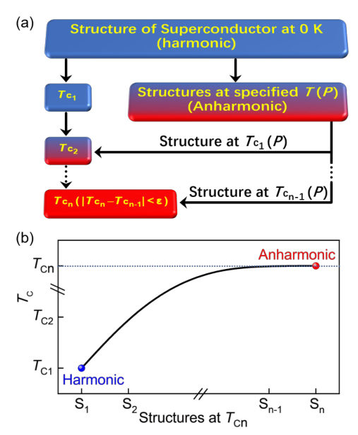
<figcaption class="paper-figure-caption"><b>Fig 1.</b> FIG. 1. (a) General approach for studying superconductivity with incorporated anharmonic effects. T(P) denotes the predicted critical temperature T at a given pressure P, used for the lattice renormalization. (b) Convergent Tc and Tcn under several temperature dependent geometries. The horizontal dashed line marks the final converged Tcn.</figcaption>
</figure>
<figure class="paper-figure-card">
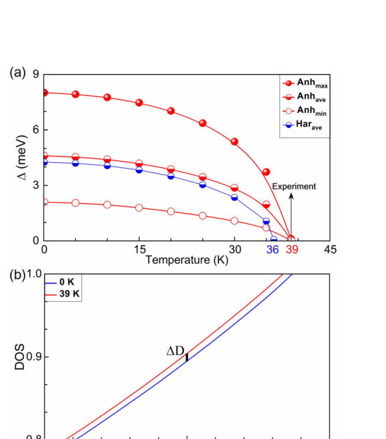
<figcaption class="paper-figure-caption"><b>Fig 2.</b> FIG. 2. (a) Temperature-dependent superconducting gaps. The superconducting gaps of MgB2 are shown as a function of temperature, comparing anharmonic (red symbols) and harmonic (blue symbols) calculations. Solid, semi-filled, and hollow red circles represent the maximum, average, and minimum superconducting gaps obtained with anharmonic effects, respectively, across the temperature range from 0.1 K to 39 K (Tc). The blue semi-filled circles correspond to the average superconducting gap calculated using the harmonic geometry. (b) Density of states (DOS) of MgB2 calculated using harmonic (blue line, 0 K) and anharmonic (red line, 39 K) equilibrium geometries.</figcaption>
</figure>
<figure class="paper-figure-card">
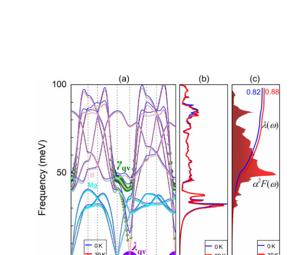
<figcaption class="paper-figure-caption"><b>Fig 3.</b> FIG. 3. Phonon and electron-phonon coupling properties of MgB2 within the harmonic approximation (0 K, blue lines) and with the inclusion of anharmonic effects (39 K, red lines). (a) Element-projected phonon dispersion with electron- phonon coupling λqν (purple balls) and phonon linewidth γqν (green balls). (b) Phonon density of states (PhDOS). (c) Frequency-dependent Eliashberg spectral functions α2F(ω) with the cumulative EPC strength λ(ω).</figcaption>
</figure>
<figure class="paper-figure-card">
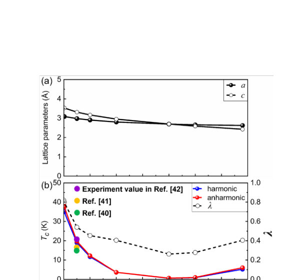
<figcaption class="paper-figure-caption"><b>Fig 4.</b> FIG. 4. (a) Pressure-dependent lattice constants including anharmonic effects. (b) Pressure-dependent superconducting critical temperature Tc within the harmonic approximation (blue balls) and with the inclusion of anharmonic effects (red balls), as well as the electron-phonon coupling constant λ for the case of including the anharmonic effects.</figcaption>
</figure>
</div>

<p><strong>Summary.</strong> This paper introduces ah-SCDFT, a general theoretical framework that incorporates crucial anharmonic lattice vibrations into first-principles calculations for superconductivity. By applying this method to MgB2, the authors demonstrate that including these effects significantly improves the accuracy of predicted superconducting critical temperatures and gaps compared to simpler harmonic approximations.</p>
<p><strong>Why it may be interesting.</strong> While focused on condensed matter superconductivity, the rigorous inclusion of finite-temperature effects via free energy minimization and anharmonic corrections touches upon advanced statistical mechanics treatments of interacting quantum systems.</p>
<details>
<summary>Detailed structure</summary>
<p><strong>Main problem.</strong> First-principles studies of superconductivity often neglect anharmonic effects (AHE), which are crucial for achieving quantitative accuracy in predicting superconducting properties.</p>
<p><strong>Main result.</strong> The proposed ah-SCDFT approach accurately reproduces the experimental superconducting behavior of MgB2 under ambient conditions and applied pressure, resolving theoretical discrepancies regarding Tc(P).</p>
<p><strong>Method.</strong> The authors introduce anharmonic superconducting density functional theory (ah-SCDFT), which systematically incorporates anharmonic corrections into standard SCDFT by minimizing the Helmholtz free energy.</p>
<p><strong>Model / system.</strong> The study focuses on superconductivity, using the prototypical superconductor MgB2 as a test case. The methodology involves combining first-principles electronic structure calculations with finite-temperature equilibrium structures derived from the quasi-harmonic approximation (QHA).</p>
<p><strong>Key observables.</strong> Superconducting critical temperature ($T_c$), superconducting gaps, electron-phonon coupling constant ($\lambda$), and pressure dependence of these quantities.</p>
<p><strong>Important parameters / regimes.</strong> Temperature (ambient to elevated), applied pressure (up to 200 GPa), and the vibrational free energy terms.</p>
<p><strong>Assumptions / limitations.</strong> The primary assumption is that anharmonic corrections are necessary for reliable quantitative predictions, overcoming limitations inherent in the harmonic approximation.</p>
<p><strong>Figures summary.</strong> Figures compare superconducting gaps calculated with and without anharmonicity (Figure 2); they show phonon dispersion and DOS at different temperatures/pressures (Figure 3); and they illustrate pressure dependence of lattice constants and Tc (Figure 4).</p>
<p><strong>Paper structure.</strong> The paper establishes the need for anharmonic corrections, details the ah-SCDFT methodology involving iterative free energy minimization, applies it to MgB2 under varying conditions (T and P), and compares results against experimental data.</p>
</details>
<details>
<summary>Abstract</summary>
<p>First-principles studies of superconductivity often neglect anharmonic effects (AHE), despite their crucial role in achieving quantitative accuracy in many materials. To bridge this gap, we introduce a general computational approach, termed anharmonic superconducting density functional theory (ah-SCDFT) which systematically incorporates anharmonic corrections into standard SCDFT. This approach allows for high-fidelity predictions of superconducting properties with only a modest increase in computational cost for a limited number of superconducting calculation convergence steps. We demonstrate the effectiveness and reliability of ah-SCDFT by applying it to the prototypical superconductor MgB2, accurately reproducing its superconducting behavior under both ambient conditions and applied pressure in excellent agreement with experiment. Our results establish ah-SCDFT as a powerful, efficient, and broadly applicable approach for quantitatively reliable studies of superconductivity and a promising tool for the prediction of new superconducting materials.</p>
</details>
<p><sub><a href="#top">↑ back to top</a></sub></p>

<p><a id="paper-2607.16439"></a></p>
<h3 id="atomically-precise-triple-step-staircase-on-a-vicinal-silicon-surface-is-it-si5-5-7-si7-7-10-or-si8-8-11"><a href="http://arxiv.org/abs/2607.16439v1">Atomically precise triple-step staircase on a vicinal silicon surface: Is it Si(5 5 7), Si(7 7 10) or Si(8 8 11)?</a></h3>
<p><strong>Authors:</strong> A. N. Chaika, A. Yu. Aladyshkin, V. N. Semenov, A. S. Aladyshkina, A. M. Ionov, S. I. Bozhko<br>
<strong>Type:</strong> experiment · <strong>Category:</strong> other · <strong>PDF:</strong> <a href="https://arxiv.org/pdf/2607.16439v1">https://arxiv.org/pdf/2607.16439v1</a><br>
<strong>Analysis basis:</strong> full PDF text, analyzed in chunks
<strong>Topic relevance:</strong> <code>methods for driven-dissipative</code> <strong>1/5</strong></p>
<div class="figure-strip-hint">↔ Scroll figures horizontally</div>
<div class="paper-figures-scroll">
<figure class="paper-figure-card">
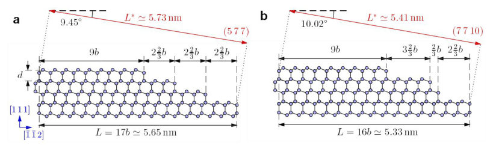
<figcaption class="paper-figure-caption"><b>Fig 1.</b> Figure 1. Schematic models of the periodic Si(5 5 7) (a) and Si(7 7 10) (b) triple-step staircases with a (112)- oriented triple step (a) and a sequence of monatomic step, Si(1 1 1) mini-terrace and (001)-oriented double step with height equal to two distances 2d between neighboring silicon atomic layers (b) [1, 16]. The model presentations do not show adatoms on the 7×7-reconstructed Si(111) terraces and reconstructions at the step edges. The step periodicity in projection onto the terrace plane and along the vicinal surface are indicated as L and L*, respectively.</figcaption>
</figure>
<figure class="paper-figure-card">
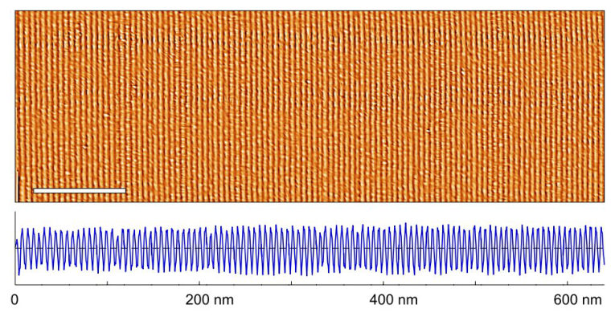
<figcaption class="paper-figure-caption"><b>Fig 2.</b> Figure 2. Typical differential D(x,y) map obtained from a large-area STM image of a regular triple-step array fabricated on the Si(5 5 7) wafer (top panel, image size of 640 × 210 nm2, tunneling voltage U = -1.8 V, tunneling current I = 40 pA, scale bar corresponds to 100 nm). The solid line at the bottom shows the profile of the D(x,y) map averaged along the vertical direction and illustrates the regularity of the triple-step array on length scales exceeding 500 nm.</figcaption>
</figure>
<figure class="paper-figure-card">
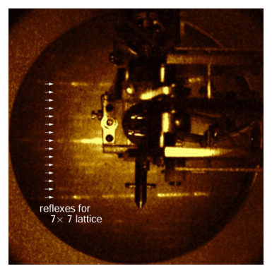
<figcaption class="paper-figure-caption"><b>Fig 3.</b> Figure 3. LEED pattern taken at an incident electron beam energy of 75 eV from the triple-step staircase fabricated on the Si(5 5 7) wafer. The marked horizontal rows correspond to the 7×7 reconstruction on the Si(1 1 1) terraces. The periodic spots in horizontal rows correspond to the formation of the regular triple-step array on large surface areas..</figcaption>
</figure>
<figure class="paper-figure-card">
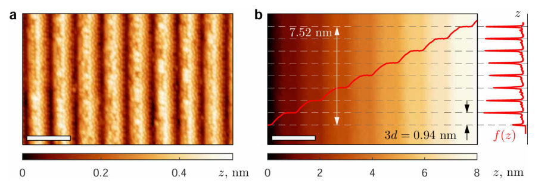
<figcaption class="paper-figure-caption"><b>Fig 4.</b> Figure 4. (a) STM topography image after global plane correction (image size 48.4 × 30 nm², U = 1.5 V, I = 60 pA) acquired at room temperature reveals a periodic array of triple steps and Si(1 1 1) terraces. Each terrace comprises one complete 7×7 unit cell and an additional row of adatoms. (b) After subtraction of a plane parallel to the terraces, the same image shows all flat (1 1 1) terraces horizontal. The red line shows the height variation of the aligned image as a function of the x-coordinate. The inset on the right side shows the histogram, illustrating the distribution of visible heights for the aligned image. The interval between the dashed lines equals 3d = 0.94 nm. (c)...</figcaption>
</figure>
<figure class="paper-figure-card">
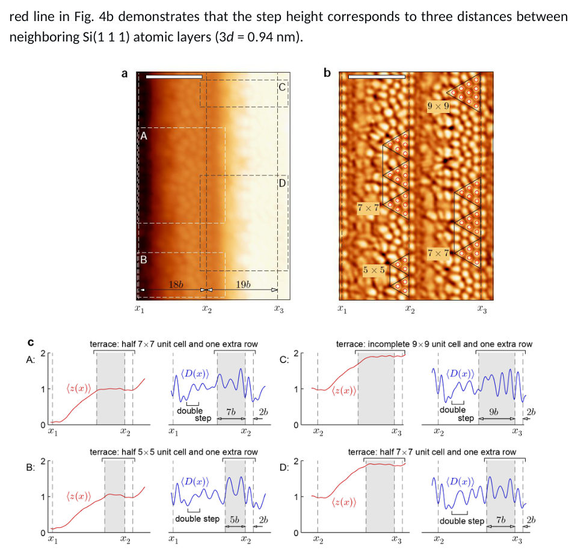
<figcaption class="paper-figure-caption"><b>Fig 5.</b> Figure 5. (a, b) Aligned topography STM image measured at tunneling voltage U = 1.5 V and current I = 60 pA (a) and differential D(x,y) map (b) of a surface area containing two periods of the triple-step structure shown in Figure 4. The distance between equivalent positions on the consecutive Si(1 1 1) terraces (x1, x2, x3) is equal to 18b and 19b, as indicated on panel (a). The positions of adatoms corresponding to ideal 5×5, 7×7, and 9×9 cells are indicated above the experimental features on the D(x,y) map (b). Scale bars on panels (a) and (b) correspond to 5 nm. (c) Y-averaged cross-sections of the topography image and D(x,y) map in areas A-D indicated by rectangles on panel (a)The...</figcaption>
</figure>
</div>

<p><strong>Summary.</strong> This work uses advanced Scanning Tunneling Microscopy (STM) to determine the exact atomic structure of a triple-step staircase on vicinal silicon wafers. By analyzing periodicity and cross-sectional profiles, the authors argue that the observed structure corresponds specifically to the $   ext{Si}(8\ 8\ 11)$ orientation. This provides an atomically precise understanding of surface reconstruction relevant for materials science applications.</p>
<p><strong>Why it may be interesting.</strong> While focused on materials science, the precise atomic characterization of surfaces using STM techniques is foundational to understanding interfaces, which are critical in quantum device engineering (e.g., superconducting qubits or quantum dots).</p>
<details>
<summary>Detailed structure</summary>
<p><strong>Main problem.</strong> The study aims to definitively determine the correct atomic structure of a triple-step staircase formed on vicinal silicon surfaces, distinguishing between proposed candidates like Si(5 5 7), Si(7 7 10), or Si(8 8 11).</p>
<p><strong>Main result.</strong> Analysis of STM data strongly suggests that the observed periodicity corresponds to an $   ext{Si}(8\ 8\ 11)$ orientation, yielding a period of $L = 18b \approx 5.99$ nm.</p>
<p><strong>Method.</strong> The research relies heavily on Scanning Tunneling Microscopy (STM) measurements, utilizing differential D(x,y) maps and cross-section analysis to resolve atomic arrangements.</p>
<p><strong>Model / system.</strong> The physical system is vicinal silicon wafers ($    ext{Si}(h\ h\ m)$), which exhibit arrays of $   ext{Si}(1\ 1\ 1)$ terraces separated by mono- or multiatomic steps forming a periodic staircase structure. The analysis compares experimental data to theoretical models based on $7	imes 7$ reconstructions.</p>
<p><strong>Key observables.</strong> Periodicity ($L$) of the staircase, atomic structure of steps and mini-terraces, and characteristic distances like $b=0.333$ nm.</p>
<p><strong>Important parameters / regimes.</strong> The measured periodicity is found to be $L = 18b \approx 5.99$ nm; miscut angles are also discussed in relation to the proposed structures.</p>
<p><strong>Assumptions / limitations.</strong> The analysis assumes that observed features can be mapped onto ideal atomic lattice models, though limitations regarding step edge reconstructions and defects are noted.</p>
<p><strong>Figures summary.</strong> Figures show D(x,y) maps and cross-sections confirming periodicities ($L=18b$) and illustrating the sequence of monatomic steps separated by $7	imes 7$ reconstructed mini-terraces consistent with $   ext{Si}(8\ 8\ 11)$.</p>
<p><strong>Paper structure.</strong> The paper methodically analyzes STM data, comparing measured periodicities against theoretical predictions for different crystal orientations ($   ext{Si}(5\ 5\ 7)$, etc.), ultimately converging on the periodicity and structure associated with $  ext{Si}(8\ 8\ 11)$.</p>
</details>
<details>
<summary>Abstract</summary>
<p>Scanning tunneling microscopy studies of periodic arrays of triple steps fabricated on single-crystalline Si(5 5 7) wafers demonstrate several possible atomic structures of consecutive steps and Si(1 1 1) terraces maintaining the same periodicity on micrometer-sized surface areas. Detailed analysis of the atomically resolved data reveals the formation of Si(8 8 11) triple-step staircase with a period of 18b=5.99 nm in projection onto the terrace plane, where b=0.333 nm is the distance between atomic rows for the Si(1 1 1)1x1 surface. Schematic models for several possible configurations of either 7x7 or 5x5-reconstructed terraces and triple steps are proposed.</p>
</details>
<p><sub><a href="#top">↑ back to top</a></sub></p>

<p><a id="paper-2607.17866"></a></p>
<h3 id="physics-constrained-machine-learning-for-decoding-multi-nanobubble-configurations-in-graphene"><a href="http://arxiv.org/abs/2607.17866v1">Physics-constrained machine learning for decoding multi-nanobubble configurations in graphene</a></h3>
<p><strong>Authors:</strong> Jihye Kim, Taegeun Song, Nojoon Myoung<br>
<strong>Type:</strong> theory · <strong>Category:</strong> disordered systems and neural networks · <strong>PDF:</strong> <a href="https://arxiv.org/pdf/2607.17866v1">https://arxiv.org/pdf/2607.17866v1</a><br>
<strong>Analysis basis:</strong> full PDF text, analyzed in chunks
<strong>Topic relevance:</strong> <code>methods for driven-dissipative</code> <strong>1/5</strong></p>
<div class="figure-strip-hint">↔ Scroll figures horizontally</div>
<div class="paper-figures-scroll">
<figure class="paper-figure-card">
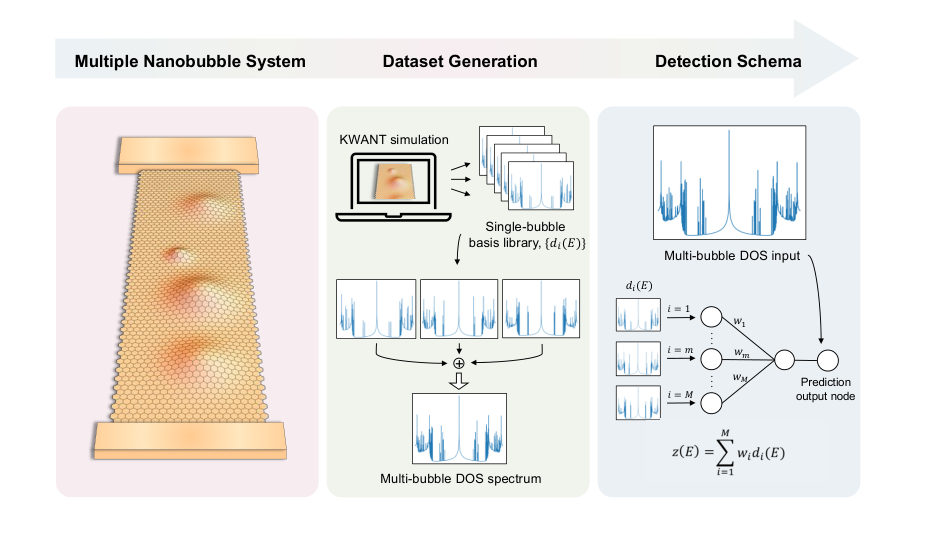
<figcaption class="paper-figure-caption"><b>Fig 1.</b> Figure 1: Schematic overview of the physics-constrained framework for identifying multi- nanobubble configurations in graphene. The left panel illustrates a graphene nanoribbon containing multiple nanobubbles, each characterized by its height h and lateral width σ. The middle panel shows the dataset-generation procedure: single-bubble DOS basis spectra are obtained from quantum-transport simulations using the Kwant Python package and are com- bined as a normalized sum to construct composite multi-nanobubble spectra. This construction follows the previously verified numerical equivalence between full multi-bubble calculations and summed single-bubble spectra for sufficiently separated...</figcaption>
</figure>
<figure class="paper-figure-card">
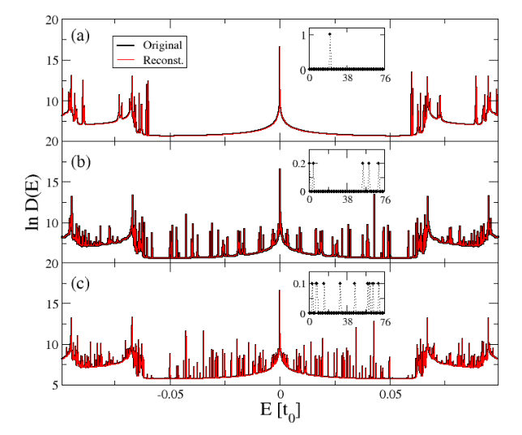
<figcaption class="paper-figure-caption"><b>Fig 2.</b> Figure 2: Reconstruction of composite DOS spectra for multi-nanobubble configurations. The original composite spectra (black) are compared with spectra reconstructed through spectrum- specific coefficient optimization (red) for systems containing (a) one, (b) five, and (c) ten nanobubbles. The insets show the corresponding optimized weight distributions over the single- bubble basis library. The close agreement between the curves indicates that the decomposition identifies and reconstructs the constituent contributions as the number of nanobubbles increases.</figcaption>
</figure>
<figure class="paper-figure-card">
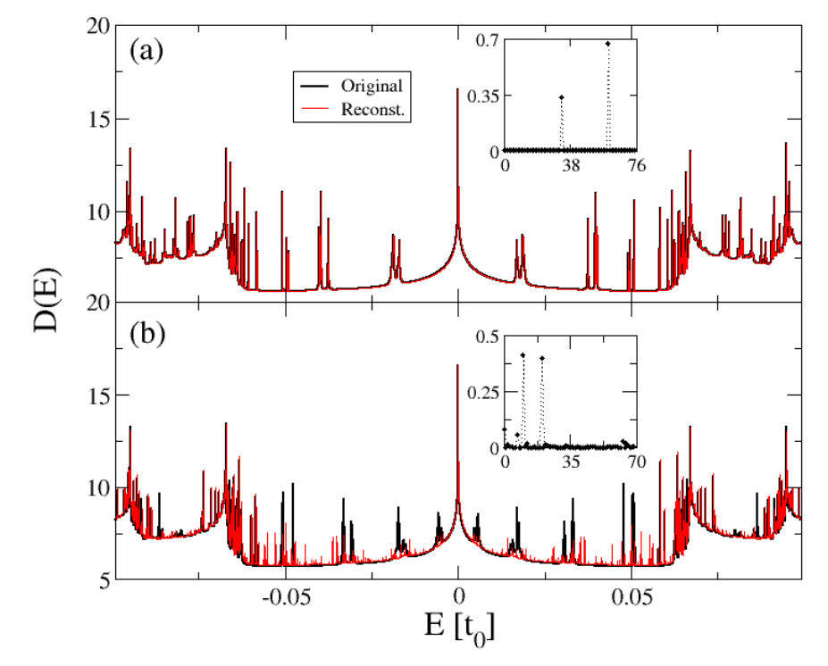
<figcaption class="paper-figure-caption"><b>Fig 3.</b> Figure 3: Tests beyond idealized basis conditions. (a) Reconstruction of an imbalanced configuration containing two identical nanobubbles and one distinct nanobubble, showing that the decomposition identifies repeated basis components through their fractional multiplicity weights. (b) Reconstruction with an incomplete basis dictionary, in which one of the three constituent nanobubbles is absent from the available dictionary; the number of basis channels is reduced from 76 to 70. In both panels, the original DOS is shown in black, the reconstructed DOS is shown in red, and the insets display the optimized basis weights.</figcaption>
</figure>
<figure class="paper-figure-card">
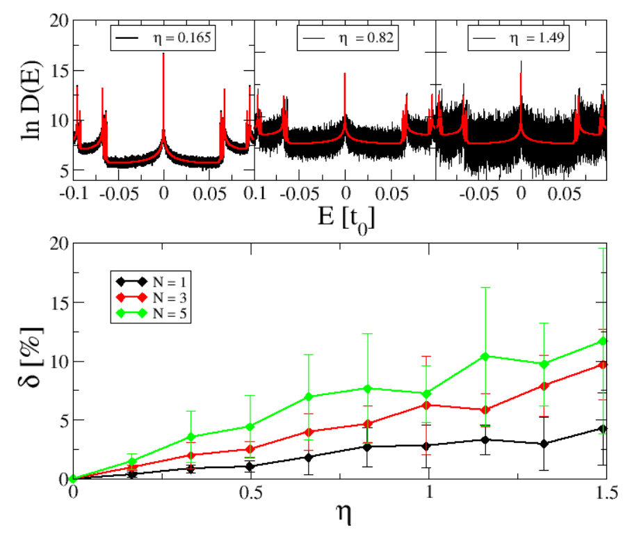
<figcaption class="paper-figure-caption"><b>Fig 4.</b> Figure 4: Robustness against additive Gaussian white noise in the log-transformed input spectra. Top: representative noisy log-DOS spectra obtained by adding Gaussian white noise after logarithmic transformation; the noisy inputs are shown in red. Bottom: mean normalized L1 weight error δw as a function of the mean noise amplitude for configurations containing N = 1, 3, and 5 nanobubbles. At each noise level, the averages are taken over 7, 6, and 8 independent realizations for N = 1, 3, and 5, respectively; the vertical error bars denote the standard deviation of δw. The error increases with both noise amplitude and configuration complexity, while the decomposition remains stable over the...</figcaption>
</figure>
</div>

<p><strong>Summary.</strong> The paper presents a novel, physics-constrained machine learning method to decode the arrangement of multiple nanobubbles in graphene by analyzing their composite electronic Density-of-States spectra. It exploits the known additive relationship between single and multi-bubble DOS signatures to decompose the measured spectrum into constituent geometries. This provides an interpretable tool for characterizing strain-engineered quantum materials.</p>
<p><strong>Why it may be interesting.</strong> This work exemplifies applying advanced machine learning techniques to solve complex inverse problems in condensed matter spectroscopy. The use of physical constraints (the additive DOS rule) within a differentiable ML framework is highly relevant for interpreting spectroscopic data from quantum materials.</p>
<details>
<summary>Detailed structure</summary>
<p><strong>Main problem.</strong> The primary challenge is accurately identifying multiple, overlapping nanobubble configurations within graphene solely from their composite electronic Density-of-States (DOS) spectra.</p>
<p><strong>Main result.</strong> The developed framework successfully reconstructs complex bubble arrangements with high fidelity and robustness against noise and missing basis components by leveraging a physics-constrained decomposition model.</p>
<p><strong>Method.</strong> A physics-constrained machine learning approach is used to decompose the measured composite DOS spectrum into a sum of known single-bubble spectra, treating it as an inverse problem solved via neural network optimization.</p>
<p><strong>Model / system.</strong> The system is graphene containing multiple nanobubbles, modeled using tight-binding Hamiltonian calculations. The core physical constraint exploited is that the multi-bubble DOS is additively equivalent to the sum of its constituent single-bubble spectra for separated bubbles.</p>
<p><strong>Key observables.</strong> Optimized basis coefficients (weights) which directly identify the geometry and multiplicity of each constituent nanobubble; composition error quantified by normalized L1 weight deviation ($\delta w$).</p>
<p><strong>Important parameters / regimes.</strong> The number of nanobubbles ($N$), the degree of spectral overlap, and the level of added Gaussian white noise ($\eta$).</p>
<p><strong>Assumptions / limitations.</strong> The method fundamentally relies on the validated additive relationship between the multi-bubble DOS and the sum of single-bubble spectra, which is assumed to hold for sufficiently separated bubbles.</p>
<p><strong>Figures summary.</strong> Figures demonstrate reconstruction fidelity for increasing bubble complexity (up to ten) and test robustness by showing successful decomposition when constituents are repeated or when the basis dictionary is incomplete. Noise tests quantify performance degradation as a function of added noise amplitude.</p>
<p><strong>Paper structure.</strong> The paper establishes the physical problem (overlapping DOS), introduces the physics-constrained ML framework based on the additive spectral relation, details the methodology using neural decomposition in log space, and validates its robustness through systematic testing against noise and incomplete basis sets.</p>
</details>
<details>
<summary>Abstract</summary>
<p>Identifying multiple graphene nanobubbles from electronic spectra is challenging because their strain-induced features overlap. We develop a physics-constrained machine-learning framework that decodes nanobubble configurations from density-of-states (DOS) spectra. For spatially separated nanobubbles, previous full quantum-transport calculations established that the multi-bubble DOS is numerically equivalent to the normalized sum of the constituent single-bubble spectra. We encode this validated additive relation in a compact neural decomposition model. For each target spectrum, the basis coefficients are optimized independently, and the resulting weights directly identify the constituent geometries. The method accurately reconstructs configurations of increasing complexity and remains robust to repeated constituents, incomplete basis dictionaries, and simulated measurement noise. The framework provides an interpretable route for characterizing strain-engineered graphene nanostructures and may extend to other quantum materials with additive spectral responses.</p>
</details>
<p><sub><a href="#top">↑ back to top</a></sub></p>

<p><a id="paper-2607.18095"></a></p>
<h3 id="structural-and-vibrational-properties-of-dmath1881mathse-from-first-principles-anharmonic-quantum-and-isotope-effects"><a href="http://arxiv.org/abs/2607.18095v1">Structural and Vibrational Properties of D$_3$Se from First Principles: Anharmonic Quantum and Isotope Effects</a></h3>
<p><strong>Authors:</strong> Wenjie Ma, Yao Ma, Mi Pan, Pugeng Hou, Francesco Belli<br>
<strong>Type:</strong> theory · <strong>Category:</strong> other · <strong>PDF:</strong> <a href="https://arxiv.org/pdf/2607.18095v1">https://arxiv.org/pdf/2607.18095v1</a><br>
<strong>Analysis basis:</strong> full PDF text, analyzed in chunks
<strong>Topic relevance:</strong> <code>Keldysh / 2PI / non-Gaussian methods</code> <strong>1/5</strong></p>
<div class="figure-strip-hint">↔ Scroll figures horizontally</div>
<div class="paper-figures-scroll">
<figure class="paper-figure-card">
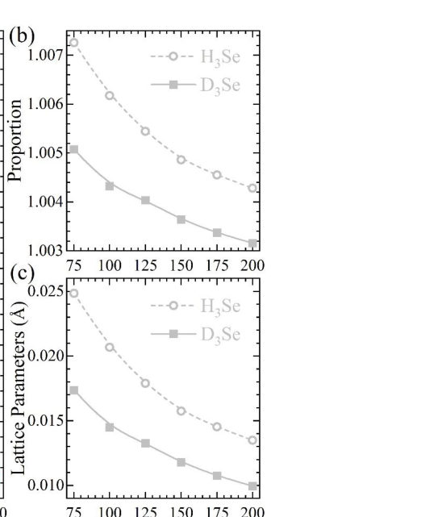
<figcaption class="paper-figure-caption"><b>Fig 1.</b> FIG. 1. (a) Lattice parameter as a function of pressure for the cubic Im3̅m phases of H3Se (dotted) and D3Se (solid). Red symbols and lines represent the anharmonic results obtained from the SSCHA free energy in the fixed-target-pressure mode, while black symbols and lines correspond to the harmonic (classical) approximation evaluated with the Born–Oppenheimer potential. The two harmonic curves coincide exactly, reflecting the mass independence of the classical limit. Panels (b) and (c) show the ratio and difference of the anharmonic to harmonic lattice parameters at each pressure for H3Se (dotted) and D3Se (solid), respectively, to clearly illustrate the lattice expansion induced by...</figcaption>
</figure>
<figure class="paper-figure-card">
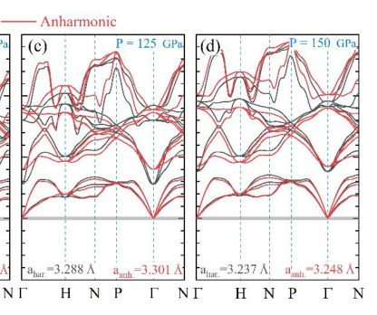
<figcaption class="paper-figure-caption"><b>Fig 2.</b> FIG. 2. Phonon spectra of the cubic Im3̅m D3Se at selected pressures, comparing harmonic (black) and anharmonic (red) results: (a) 75 GPa, (b) 100 GPa, (c) 125 GPa, and (d) 150 GPa. The anharmonic spectra, derived from the static limit of the SSCHA dynamical theory via the Hessian of the free energy D(F) in Eq (3), while the harmonic results are obtained from the classical harmonic dynamical matrix D(h) in Eq. (1). A solid grey line separates the regions of positive frequencies from those of negative (imaginary) frequencies.</figcaption>
</figure>
<figure class="paper-figure-card">
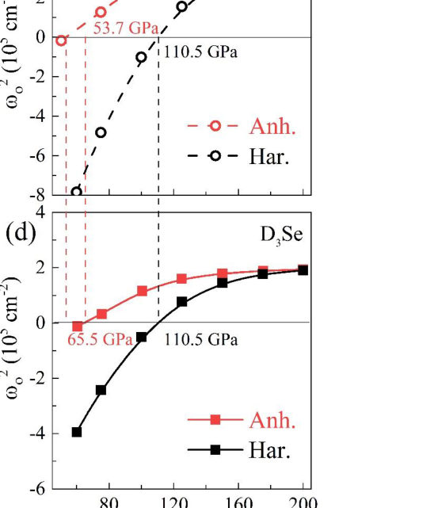
<figcaption class="paper-figure-caption"><b>Fig 3.</b> FIG. 3. Squared frequency ω02 of the T1u mode at Γ for H₃Se and D₃Se as a function of pressure. The color and line-style conventions are the same as in Fig. 1(a): red/black for anharmonic/harmonic results, and solid/dashed for D3Se/H3Se, respectively. Panels (a) and (c) focus on the two points immediately bracketing the zero crossing (with linear fits) to extract the transition pressure. Panels (b) and (d) present the full pressure dependence of ω02, illustrating the overall trend and validating the reliability of the linear extrapolation. The anharmonic results are calculated by diagonalizing the free energy dynamical matrix D(F)(q) [Eq. (3)] and the harmonic results by diagonalizing the...</figcaption>
</figure>
<figure class="paper-figure-card">
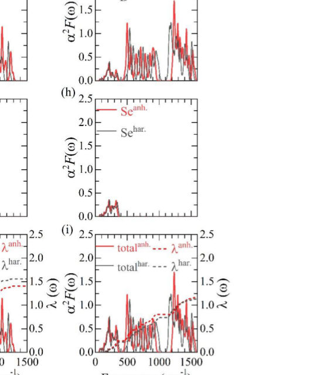
<figcaption class="paper-figure-caption"><b>Fig 4.</b> Fig. 4 (a-c) Projected phonon density of states (PDOS) of D3Se at 125 GPa: (a) D-atom projection, (b) Se-atom projection, and (c) total PDOS. (d-f) Projected Eliashberg spectral function α2F(ω) at 125 GPa: (d) D-atom projection, (e) Se-atom projection, and (f) total α2F(ω) together with the integrated electron-phonon coupling λ(ω). (g–i) Same as (d-f) but at 200 GPa. Black lines represent</figcaption>
</figure>
<figure class="paper-figure-card">
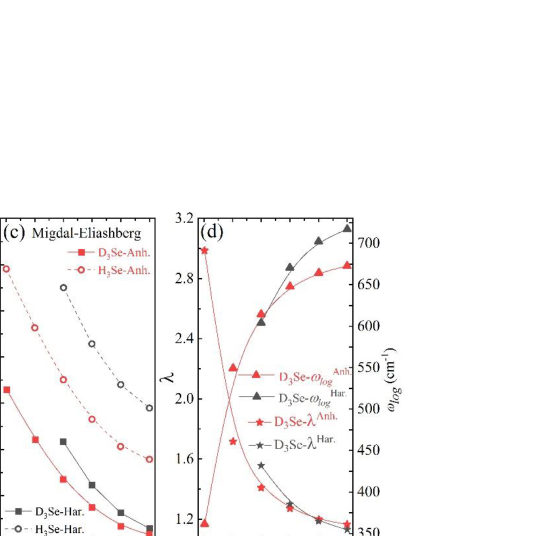
<figcaption class="paper-figure-caption"><b>Fig 5.</b> FIG. 5. (a-c) Superconducting critical temperature Tc as a function of pressure for H3Se (circles) and D3Se (squares), calculated using (a) the McMillan equation, (b) the Allen-Dynes modified equation, and (c) the isotropic Migdal-Eliashberg equations. All calculations adopt a Coulomb pseudopotential μ∗=0.1. (d) Electron-phonon coupling constant λ (left axis) and logarithmic average frequency ωlog (right axis) for D3Se as functions of pressure. In each panel, black symbols and lines denote the harmonic (classical) results, while red symbols and lines correspond to the anharmonic (SSCHA) results. The upward triangle denotes λ, and the asterisk denotes ωlog.</figcaption>
</figure>
</div>

<p><strong>Summary.</strong> This paper uses advanced first-principles calculations to study D3Se under high pressure, showing that incorporating quantum and anharmonic effects is crucial for accurate predictions. These corrections stabilize the lattice structure and significantly alter superconducting parameters like $T_c$ and the isotope coefficient ($\alpha$). The findings emphasize that simple harmonic models fail dramatically when describing these highly compressed, light-element superconductors.</p>
<p><strong>Why it may be interesting.</strong> This work is highly relevant because it tackles the fundamental theoretical challenge of accurately modeling strongly coupled quantum systems where zero-point energy and anharmonic interactions dominate material properties, which is a core theme in advanced condensed matter theory.</p>
<details>
<summary>Detailed structure</summary>
<p><strong>Main problem.</strong> To accurately predict the structural, vibrational, and superconducting properties of hydrogen/deuterium-rich superconductors like D3Se by incorporating crucial quantum and anharmonic effects.</p>
<p><strong>Main result.</strong> Anharmonic corrections are essential, stabilizing the lattice and significantly reducing the predicted isotope coefficient ($\alpha$) compared to harmonic calculations. The study predicts a high critical temperature ($T_c \approx 154	ext{ K}$) at moderate pressures when these effects are included.</p>
<p><strong>Method.</strong> The research employs first-principles Density Functional Theory combined with the Stochastic Self-Consistent Harmonic Approximation (SSCHA) to treat zero-point motion and anharmonicity nonperturbatively.</p>
<p><strong>Model / system.</strong> The primary system studied is deuterated selenide ($    ext{D}_3    ext{Se}$) in the $  ext{Im}ar{3}   ext{m}$ phase, investigated across high pressures (60–200 GPa). The methodology involves calculating the free energy functional and deriving phonon spectra from its Hessian.</p>
<p><strong>Key observables.</strong> Superconducting critical temperature ($T_c$), isotope coefficient ($\alpha$), renormalized phonon spectra, and dynamic stability pressure.</p>
<p><strong>Important parameters / regimes.</strong> Pressure range (75–200 GPa), quantum/anharmonic corrections, BCS limit for $\alpha$ (0.5).</p>
<p><strong>Assumptions / limitations.</strong> The harmonic approximation is insufficient due to zero-point motion and anharmonicity; the SSCHA method provides a rigorous treatment of these effects.</p>
<p><strong>Figures summary.</strong> Figures compare lattice parameters and phonon spectra between harmonic and anharmonic treatments, illustrating the stabilizing effect of quantum fluctuations. Figure 6 specifically compares $\alpha$ values across different theoretical frameworks (McMillan, Allen-Dynes, Migdal-Eliashberg) as a function of pressure.</p>
<p><strong>Paper structure.</strong> The paper progresses by first establishing the necessity of quantum/anharmonic corrections for structural stability and phonon spectra. It then applies these corrected parameters to calculate the electron-phonon coupling ($\lambda$) and $T_c$. Finally, it analyzes the isotope effect ($\alpha$), demonstrating how anharmonicity fundamentally governs its magnitude.</p>
</details>
<details>
<summary>Abstract</summary>
<p>Hydrogen-rich superconductors have garnered considerable interest following the discovery of hot superconductivity in high pressure H$_3$S, reviving prospects for room temperature superconductors under high-pressures. Using H$_3$Se as a reference system, we investigate the vibrational and superconducting properties of D$_3$Se in the Im\bar{3}m phase across 60-200 GPa by combining first-principles calculations with the stochastic self-consistent harmonic approximation to treat ionic quantum and anharmonic effects. These effects introduce significant renormalization to the phonon spectra and stabilize the lattice down to at least 70 GPa, well below the harmonic prediction of &gt;110 GPa. Ultimately, the phonon renormalizations alter the electron-phonon coupling, introducing a decrease in the superconducting critical temperature by about 3-16 K across the studied pressure range with respect to standard calculations. Including anharmonic phonons within the Migdal-Eliashberg theory yields $T_c \approx 154$ K at 75 GPa (with $μ^* = 0.1$, $λ = 3.0$), highlighting D3Se as a promising high-Tc superconductor at moderate pressures. Examining the role of anharmonicity in the isotope effect, we find that at 200 GPa it suppresses the isotope coefficient $α$ to 0.29 one third below the harmonic value (0.44) which approaches the BCS limit of 0.5. This dramatic reduction demonstrates that anharmonicity fundamentally governs the isotope effect on this system. The stark discrepancy between anharmonic and harmonic descriptions underscores the need for targeted experimental efforts to resolve the origin of the persistent theory-experiment discrepancy in compressed hydrides.</p>
</details>
<p><sub><a href="#top">↑ back to top</a></sub></p>

<p><a id="paper-2607.18117"></a></p>
<h3 id="superconductivity-in-mghcu3-perovskite-revisited"><a href="http://arxiv.org/abs/2607.18117v1">Superconductivity in MgHCu3 perovskite revisited</a></h3>
<p><strong>Authors:</strong> Piotr Szkudlarek, Wojciech Grochala<br>
<strong>Type:</strong> theory · <strong>Category:</strong> other · <strong>PDF:</strong> <a href="https://arxiv.org/pdf/2607.18117v1">https://arxiv.org/pdf/2607.18117v1</a><br>
<strong>Analysis basis:</strong> full PDF text, analyzed in chunks
<strong>Topic relevance:</strong> <code>Keldysh / 2PI / non-Gaussian methods</code> <strong>1/5</strong></p>
<div class="figure-strip-hint">↔ Scroll figures horizontally</div>
<div class="paper-figures-scroll">
<figure class="paper-figure-card">
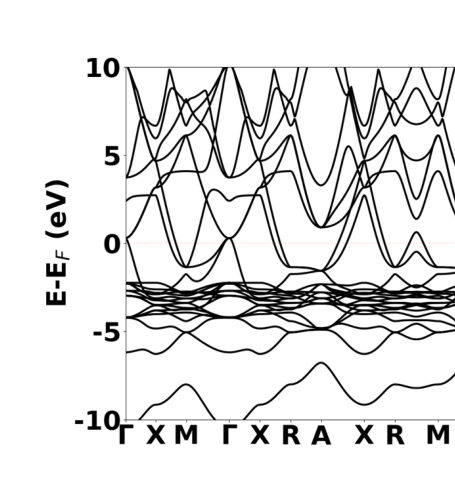
<figcaption class="paper-figure-caption"><b>Fig 1.</b> Figure 1. The electronic band structure for the densest studied k-point mesh (24x24x24)</figcaption>
</figure>
<figure class="paper-figure-card">
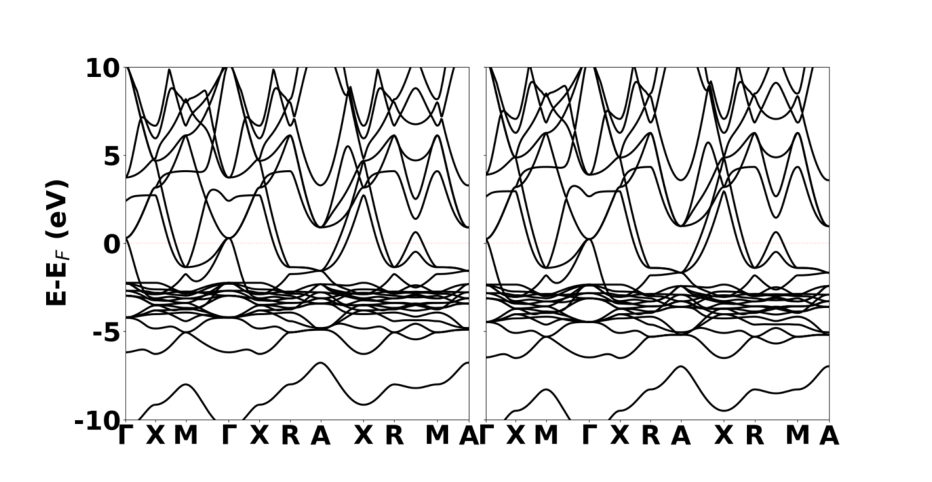
<figcaption class="paper-figure-caption"><b>Fig 2.</b> Figure 3 we present the comparison of the phonon dispersion and phonon density of states for</figcaption>
</figure>
<figure class="paper-figure-card">
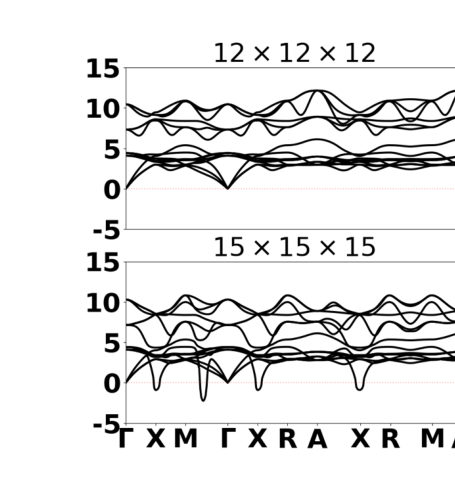
<figcaption class="paper-figure-caption"><b>Fig 3.</b> Figure 2. The phonon dispersion curves obtained using the PBE functional and the four</figcaption>
</figure>
<figure class="paper-figure-card">
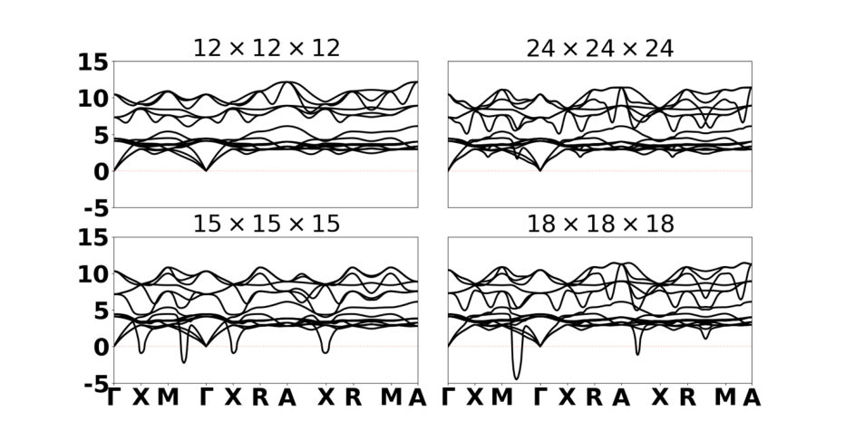
<figcaption class="paper-figure-caption"><b>Fig 4.</b> Figure 3. The phonon dispersion curves and DOS, as well as the Eliashberg function for the</figcaption>
</figure>
</div>

<p><strong>Summary.</strong> This theoretical study re-evaluates the superconducting properties of MgHCu3 perovskite using DFT calculations. The authors find that while the electronic structure is robust, phonon-related properties and the resulting critical temperature (Tc) are highly sensitive to computational parameters like k-point mesh density and choice of functional. They caution that high Tc claims in this field require much more rigorous, multi-parameter benchmarking.</p>
<p><strong>Why it may be interesting.</strong> While focused on solid-state superconductivity, the rigorous investigation into the limitations imposed by computational approximations (functional dependence, grid convergence) mirrors challenges in modeling complex quantum many-body systems where small changes can drastically alter predicted ground states or excitation spectra.</p>
<details>
<summary>Detailed structure</summary>
<p><strong>Main problem.</strong> The authors reexamine superconductivity in MgHCu3 perovskite, aiming to scrutinize the reliability of high critical temperature (Tc) claims for hydride superconductors.</p>
<p><strong>Main result.</strong> Calculated Tc values vary widely (10–31 K) depending on computational parameters and do not exceed the classical phonon-driven limit. The results emphasize that phonon properties are extremely sensitive to the chosen k-point mesh and functional.</p>
<p><strong>Method.</strong> Density Functional Theory (DFT) calculations using PBEsol and PBE functionals were employed to compute electronic structure, lattice dynamics, electron-phonon coupling, and subsequently Tc via the McMillan–Allen–Dynes formula.</p>
<p><strong>Model / system.</strong> The study focuses on the hypothetical perovskite superconductor MgHCu3. The theoretical framework involves calculating phonon dispersion and electron-phonon coupling ($\lambda$) to predict superconducting properties.</p>
<p><strong>Key observables.</strong> Critical Temperature (Tc), Electron-Phonon Coupling Constant (lambda), Phonon Dispersion/Spectrum, Lattice Constant (a).</p>
<p><strong>Important parameters / regimes.</strong> Computational parameters like k-point mesh density (12x12x12 to 24x24x24) and DFT functional (PBE vs PBEsol) are critical variables.</p>
<p><strong>Assumptions / limitations.</strong> The primary limitation noted is the extreme sensitivity of phonon properties to computational grid parameters, suggesting that current theoretical predictions require rigorous benchmarking against experiments.</p>
<p><strong>Figures summary.</strong> Supporting information details systematic variations in band structure, DOS, and Tc dependence on Gaussian broadening across different functional/mesh combinations.</p>
<p><strong>Paper structure.</strong> The paper systematically re-evaluates the crystal structure and electronic properties using multiple computational parameters before calculating superconducting metrics. The core argument revolves around demonstrating the parameter sensitivity of the phonon calculations.</p>
</details>
<details>
<summary>Abstract</summary>
<p>We reexamine the crystal structure, electronic structure, lattice dynamics, phonon dispersion, electron-phonon coupling, and superconducting properties of MgHCu3 perovskite using the PBEsol and PBE functionals. This perovskite phase was recently proposed to exhibit superconductivity with the critical superconducting temperature, TC, of 42 K, which falls slightly over the classical 40 K limit for the phonon driven superconductivity. We show that although the crystal and electronic structure of this hypothetical compound are quite robust with respect to the k point mesh and functional used, yet the phonons and phonon related properties are extremely sensitive to the density of the grid chosen as well as functional used for calculations. Correspondingly, the values of the critical superconducting temperature calculated here for different Gaussian broadenings vary in a broad range of ca. 10 to 31 K and they do not exceed the classical limit. We suggest that the properties of this and many other high TC hydrides claimed should be thoroughly scrutinized using a variety of functionals, and benchmarked with experiment, to provide more reliable values of TC.</p>
</details>
<p><sub><a href="#top">↑ back to top</a></sub></p>

<hr>
<p>
<a href="index.html">← Index</a>
 · <a href="papers_09.html">← Previous</a>
</p>
<hr>

</body>
</html>
